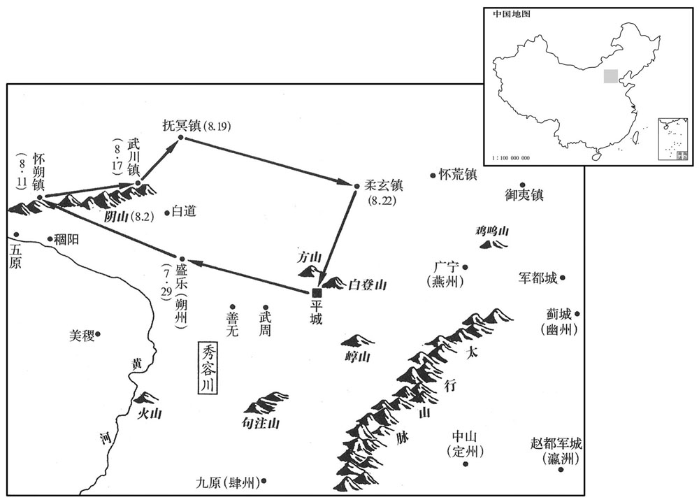
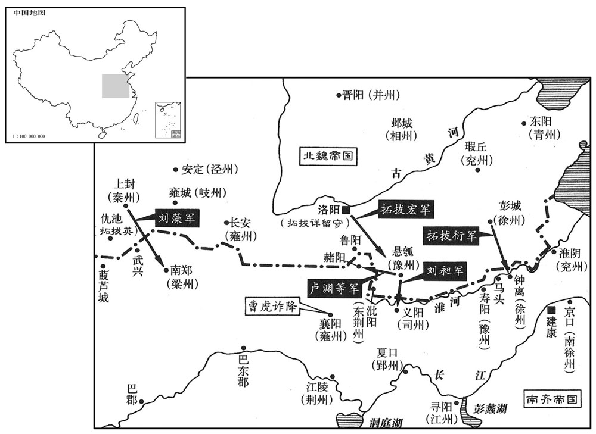
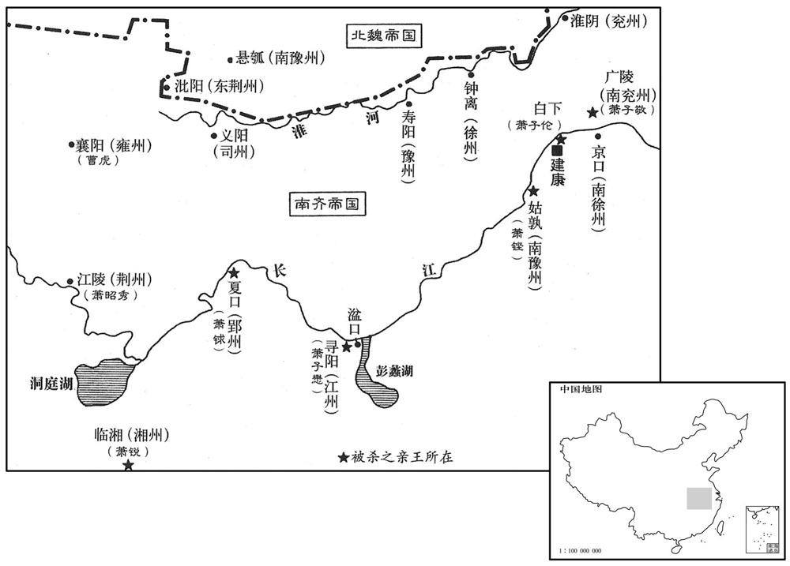

卷次与人物目录 / 卷139
资治通鉴 · 卷第一百三十九【齐纪五】
公元494年至公元494年 · 原文、白话与胡三省注
本页按胡注本编排保存全卷内容。白话采用本站所据译本，未可靠对应的内容另列说明；事件标题用于定位，并非原书文字。
本卷共105段原文，101段有译文对应，4段缺译或待核对。
卷第一百三十九【齐纪五】阏逢淹茂（甲戌），一年。
卷首原文与注释
高宗明皇帝上〔讳鸾，字景栖，小字玄度，高帝兄始安贞王道生之子。〕
公元494年 · 齐高宗明皇帝建武元年
建武元年〔（甲戌、四九四）是年十月始改元建武。〕
上传原文的注释括号有异常，字符原样保留；无法可靠划分的段落默认全文显示。
本年事件索引（现代整理）
- 齐改元隆昌大赦
- 萧子懋谋自保，陈显达密告萧鸾
- 萧鸾谋废郁林王，召萧衍共谋
- 郁林王祭南郊并谒崇安陵
- 北魏孝文帝南巡祭比干墓
- 郁林王宠臣卖官专权
- 郁林王奢侈游乐，萧鸾欲除之
- 萧谌、萧坦之掌禁军并劝萧鸾废立
- 何皇后私通杨珉，萧鸾逼杀之
- 萧鸾借诛周奉叔掌握禁军
- 杜文谦劝綦毋珍之先发制人被杀
- 北魏孝文帝至洛阳西宫
- 韩显宗谏北魏选举应重贤才
- 韩显宗谏刑罚贵明当而不贵深刻
- 韩显宗建议洛阳建畿置尹
- 韩显宗建议洛阳分别安置四民
- 韩显宗建议整顿淮北侨置郡县
- 韩显宗谏勿滥赐贵近，应恤贫民
- 北魏孝文帝巡幸河阴规划方泽
- 齐郁林王祭明堂
- 齐遣刘斅等聘魏
- 北魏改封拓跋干、拓跋雍
- 北魏孝文帝北巡并决定迁都洛阳
- 北魏罢西郊祭天
- 武陵王萧晔卒
- 竟陵王萧子良忧卒
- 司马光论王融求进逼死萧子良
- 北魏罢五日、七日祭祖
- 北魏议考核京官政绩
- 萧鸾开府仪同三司
- 萧昭文任扬州刺史
- 发生日食
- 北魏遣卢昶、王清石来聘
- 北魏任刘昶镇守彭城
- 北魏安定王拓跋休卒
- 北魏孝文帝北巡
- 郁林王与何胤谋除萧鸾未成
- 萧谌、萧坦之掌兵，王晏总尚书事
- 萧鸾联合王晏、徐孝嗣谋废帝
- 萧坦之欺骗郁林王，废帝之谋未发
- 萧鸾催萧谌参与废立
- 萧鸾杀曹道刚等，废郁林王立海陵王
- 谢瀹围棋不问政变，江斅托病离去
- 新安王萧昭文即位，萧鸾掌政
- 北魏孝文帝至朔州
- 齐任王敬则、萧锵、陈显达为三公
- 北魏孝文帝至阴山
- 萧鸾任萧遥光等亲党镇州
- 北魏孝文帝巡幸诸镇还平城
- 北魏实行三年一考黜陟官员
- 任城王拓跋澄考评旧臣
- 北魏孝文帝亲自黜陟百官
- 萧鸾杀萧锵、萧子隆等
- 萧子懋起兵失败被杀
- 萧鸾遣王广之袭杀萧子敬
- 萧鸾遣徐玄庆杀诸藩王，何昌寓拒命
- 孔琇之拒杀萧銶，绝食而死
- 裴叔业杀萧锐、萧銶、萧铿
- 齐解除戒严，调任诸王
- 萧鸾进爵为王，任太傅总掌军国
- 萧鸾谋篡位，谢朏求出避祸
- 司马光论三谢兄弟不预国难
- 萧鸾以日月相示王洪范
- 萧鸾诛杀五位藩王
- 萧鸾杀萧锵并诛诸王
- 萧鸾夜袭杀害诸藩王
- 柯令孙杀建安王萧子真
- 茹法亮逼杀巴陵王萧子伦
- 典签专权，藩王刺史受制
- 典签限制南海王萧子罕行动
- 戴僧静揭露典签专权弊端
- 范云解释士大夫奔走典签之故
- 萧鸾令典签诛藩王，后削弱其权
- 萧子显论藩王受制导致危乱
- 齐任萧遥欣等为豫州、郢州、司州刺史
- 北魏任拓跋丕留守平城
- 北魏孝文帝迁神主，离平城南下
- 萧鸾废海陵王即位，大赦
- 虞悰拒绝参与萧鸾废立
- 谢瀹斥责王晏冒功
- 南齐禁止地方官进献非土产礼物
- 孝文帝巡幸信都并禁蛮民侵扰南境
- 萧遥光任扬州刺史
- 北魏孝文帝巡幸邺城
- 齐封诸皇子为王
- 齐诏停止县令常贡
- 齐追尊始安王萧遥光父为景皇帝
- 齐任萧遥欣、萧遥昌镇荆豫
- 齐立萧宝卷为太子
- 北魏孝文帝至洛阳，崔亮兼吏部郎
- 北魏规划河阴牧地
- 北魏整理河西牧场旧制
- 齐恢复百官致仕铨叙，诸王复属籍
- 齐帝杀海陵王，葬礼依东海王故事
- 北魏韦珍赐谷帛，尽分贫民
- 北魏因齐废帝自立而大举南伐
- 北魏禁士民穿胡服
- 北魏刘芳、郭祚受孝文帝亲信
- 北魏孝文帝欲亲征南齐
- 北魏群臣争论是否出兵南征
- 北魏出洛阳南征并遣军守洛阳
- 北魏卢渊等攻赭阳
- 北魏修定古乐，任韩显宗、公孙崇参律

本年形势与背景参考图

本年形势与背景参考图
春，正月，丁未，改元隆昌；〔此郁林王改元也。〕大赦。
春季，正月丁未（初一），郁林王萧昭业改年号为隆昌，大赦天下。
雍州刺史晋安王子懋，〔雍，于用翻。〕以主幼时艰，密为自全之计，令作部造仗；〔诸州各有作部，主造哭仗。〕征南大将军陈显达屯襄阳，〔去年秋，武帝以魏将入寇，遣显达镇樊城。〕子懋欲胁取以为将。〔将，即亮翻；下同。〕显达密启西昌侯鸾，鸾征显达为车骑大将军；〔骑，奇寄翻。〕徙子懋为江州刺史仍令留部曲助镇襄阳，单将白直、侠毂自随。〔诸王有白直，有夹毂队。侠，读曰夹。〕显达过襄阳，〔过，音戈。〕子懋谓曰：「朝廷令身单身而返，身是天王，岂可过尔轻率！〔子懋自称天王，盖谓是天家诸王也。〕今犹欲将二三千人自随，公意何如﹖」显达曰：「殿下若下留部曲，乃是大违槉旨，其事不轻；且此间人亦难可收用。」〔此间人，谓襄阳人也。〕子懋默然。显达因辞，出即发去。子懋计未立，乃之寻阳。
雍州刺史晋安王萧子懋考虑到皇帝年幼，时局不稳定，就暗中筹措，以便发生不测之事时能自我保全。他命令所辖兵器作坊打造兵器；又想胁迫当时驻扎在襄阳的征南大将陈显达担任自己的大将。陈显达把情况密告西昌侯萧鸾，萧鸾任命陈显达为车骑大将军，而调萧子懋为江州刺史，并且命令他把部曲留下来帮助镇守襄阳，仅仅带周围随从、侍卫人员随行。陈显达经过襄阳时，萧子懋对他说：“朝廷命令我单身而返，我身为皇室王爵，难道能过于轻率吗！现在我想要二三千人马随行，不知将军您意下如何呢？”陈显达回答道：“殿下您如果不把部曲留下，就是完全违抗圣旨，这可是罪过不轻的事情呀！况且，这个地方的人也难以收用，您带上他们也未必能尽听指挥。”萧子懋见目的难以达到，只好沉默不语了。于是，陈显达告辞而出，很快就出发走了。萧子懋因计谋未成，就去了寻阳。
西昌侯鸾将谋废立，引前镇西咨议参军萧衍与同谋。〔随王子隆初以镇西将军镇荆州，引衍为咨议参军。〕荆州刺史、随王子隆，性温和，有文才；鸾欲征之，恐其不从。衍曰：「随王虽有美名，其实庸劣。既无智谋之士，爪牙唯仗司马垣历生、武陵太守卞白龙耳。二人唯利是从，若啖以显职，无有不来；随王止须折简耳。」鸾从之。征历生为太子左卫率，白龙为游击将军；〔啖，徒滥翻。折，之舌翻。帅，所律翻。〕二人并至。续召子隆为侍中、抚军将军。〔此时西昌侯已有杀诸王之心矣。萧衍由是以筹略见用。〕豫州刺史崔慧景，高、武旧将，〔将，即亮翻。〕鸾疑之，以萧衍为宁朔将军，戍寿阳。慧景惧，白服出迎；〔白服，若得罪而白衣领职者。〕衍抚安之。
西昌侯鸾萧将要谋划废除郁林王，另立新皇帝，因此叫来原镇西谘议参军萧衍一起密谋。担任荆州刺史的随王萧子隆性情温和，风雅而有文才，萧鸾想要调用他，但又担心他不听从。萧衍说：“随王这个人虽然美名外传，其实非常平庸顽劣。他身边没有一个智谋人物，手下武将中他只依靠司马垣历生和武陵太守卞白龙。垣历生和卞白龙这两个家伙是唯利是从之徒，如果以显要的官职引诱他们，没有不来的道理。至于随王本人，仅用一封信即可请到。”萧鸾听从了萧衍的计划。于是，就征召垣历生为太子左卫率，卞白龙为游击将军，垣、卞两人一起来了。接着，又征召萧子隆为侍中、抚军将军。豫州刺史崔慧景是齐高帝萧道成、齐武帝萧赜的旧将，萧鸾对他有疑心，就派遣萧衍为宁朔将军，戍守寿阳。崔慧景害怕了，穿着白色衣服出城迎接萧衍，萧衍对他大加安抚。
辛亥，郁林王祀南郊；戊午，拜崇安陵。〔郁林王即位，追尊父文惠太子曰文帝，陵曰崇安，庙号世宗。据竟陵王子良传，陵在夹右。〕
辛亥（初五），郁林王在南郊祭天；戊午（十二日）拜谒其父文惠太子墓崇安陵。
癸亥，魏主南巡；戊辰，过比干墓，〔水经注：河内朝歌县南有牧野，有比干耱，前有石铭题隶云：「殷大夫比天之墓」，不知谁所志也。〕祭以太牢，魏主自为祝文曰：「乌呼介士，胡不我臣！」
癸亥（十七日），北魏孝文帝南下巡视；戊辰（二十二日），经过比干的坟墓时，用牛、羊、猪三性祭于墓前，孝文帝亲自撰写祭文，其中说道：“呜呼！如此耿直之士，为何不生于当今成为朕的大臣呢！”
帝宠幸中书舍人綦毌珍之、朱隆之、直合将军曹道刚、周奉叔、宦者徐龙驹等。〔帝谓郁林王。〕珍之所论荐，事无不允；〔允，信也，肯也。〕内外要职，皆先论价，旨月之间，家累千金；擅取官物及役作，不俟诏旨。有司至相语云：〔语，牛倨翻。〕「宁拒至尊敕，不可违舍人命。」帝以龙驹为后合舍人，〔后合，禁中后合也。南史曰：龙驹日夜在六宫房内。〕常居含章殿，着黄纶帽，被貂裘，〔音，陟略翻。被，皮义翻。〕南向案，代帝画敕；左右侍直，与帝不异。
南齐郁林王宠幸偏爱中书舍人綦毋珍之、朱隆之、直将军曹道刚、周崐奉叔、宦官徐龙驹等人。凡是綦毋珍之所论定、荐举的事情和人选，没有得不到信任、答应的。因此，綦毋珍之把朝廷内外的重要官职统统划定价格，然后交钱任命，一月之间，他就富得家累千金。他还擅自攫取朝中物品，占用差役人员供自己驱使，不等待朝廷的诏旨。朝中的官员在一起言谈时说：“宁可抗拒皇上的圣旨，也不可以违背綦毋珍之的命令。”明帝任徐龙驹为后舍人，徐龙驹经常住在含章殿中，戴着黄纶帽，披着貂皮大衣，面朝南坐在案前，代替皇帝批阅文告，左右侍奉，与皇帝没有什么两样。
帝自山陵之后，即与左右微服游走市里，好于世宗崇安陵隧中掷涂、赌跳，〔好，呼到翻。文惠太子庙号世宗。涂，泥也。以涂泥相掷为乐也。赌跳者，以跳跃高出者为胜。咷，他吊翻。〕作诸鄙戏，极意赏赐左右，动至百数十万。每见钱，曰：「我昔思汝十〔【章：十二行本「十」作「一」；乙十一行本同；孔本同；熊校同。】〕枚不得，今日得用汝未﹖」世祖聚钱上库五亿万，斋库亦出三亿万，〔上库所储以备军国之用。斋库以供斋内所须，人主之好用。出者，出三亿万数之外也。〕金银布帛不可胜计；〔胜，音升。〕郁林王即位未翆岁，所用垂尽。入主衣库，令何后及宠姬以诸宝器相投击破碎之，用为笑乐。〔乐，音洛。〕蒸于世祖幸姬霍氏，更甚姓曰徐。〔更，工衡翻。李延寿史以霍为文帝幸姬，则「世祖」当作「世宗」。〕朝事大小，皆决于西昌侯鸾。〔朝，直遥翻；下同。〕鸾数谏争，〔数，所角翻。争，读曰诤。〕帝多不从；心忌，鸾欲除之。以尚书右仆射鄱阳王锵素和谨，对曰：「臣鸾于宗戚最长，且受寄先帝；臣等皆年少，〔长，知两翻。少，诗照翻。〕朝廷所赖，唯鸾一人，愿陛下无以为虑。」帝退，谓徐龙驹曰：「我欲与公共计取鸾，公既不同，我不能独办，且复小听。」〔复，扶又翻；下无复同。言且又小时听鸾专政也。〕
郁林王自从登基之后，就与左右侍从们穿上民服在闹市中游走戏玩，还喜欢在文惠太子崇安陵的墓道中扔掷泥巴、比赛跳高，做种种粗鄙下流的游戏，使劲赏赐服从人员，动辄就是成千上万。一见到钱，他就说：“过去我想得到你十个都不行，现在我还用得着你吗？”武帝生前聚敛钱财，上库中存有五亿万之多，斋库中所存也多于三亿万，至于金银布帛更不可胜计，而郁林王即位还不满一年，就挥霍将尽。他经常进入主衣库，让何皇后以及宠爱的妃子们用各种宝贵器具互相投击，直到把它们打破成碎片，以此玩笑取乐。他还乱伦，与父亲文惠太子的宠妾霍氏通奸，让她改姓徐。朝廷中的大小事情，全部由西昌侯萧鸾来决定。萧鸾数次劝谏，可是郁林王不但不听从，反而心生忌怨，想把萧鸾除掉。由于尚书右仆射鄱阳王萧锵曾被齐武帝所厚爱优待，郁林王就私下里对萧锵说：“您听说萧鸾对待我如何呢？”萧锵为人向来平和谨慎，就回答说：“萧鸾在皇室宗族中年岁最长，而且接受了先帝的托嘱，我们都年幼，朝廷中所可以依赖之人唯有萧鸾，盼愿陛下您不要以他为虑。”郁林王回宫之后，对徐龙驹说：“我想与萧锵一起合计收拾掉萧鸾，萧锵不同意，而我独自一人又不能办到，那么只好让萧鸾继续专权一阵子了。”
卫尉萧谌，世祖之族子也，〔萧子显齐书曰：谌于太祖为绝服族子。谌，氏壬翻。〕自世祖在郢州，谌已为腹心。〔宋元微末，世祖在郢州，欲知都下消息太祖遣谌就世祖宣传谋计，留为腹心。〕及即位，常典宿卫，机密之事，无不预闻。征南咨议萧坦之，谌之族人也。尝为东宫直合，为世宗所知。〔萧子显齐书曰：坦之以懃直直为世祖所知。既为东宫直合，则从世宗。为是，东宫亦有直合将军。〕帝以二人祖父旧人，甚亲信之。谌每请急出宿，帝通夕不寐，谌还乃安。坦之得出之后宫，帝亵狎宴游，坦之皆在侧。帝醉后，常裸袒，〔裸，郎果翻。〕坦之辄扶持谏谕。西昌侯鸾欲有所谏，帝在后宫不出，唯遣谌、坦之径进，乃得闻达。
卫尉萧谌是武帝的本家侄子，从武帝在郢州时起，萧谌就成为他的心腹之人。武帝登基即位之后，萧谌经常在宫中值宿，担任警卫，凡是机密的事情，他无不参预知晓。征南谘议萧坦之是萧谌的本家，曾经做过东宫直，为文惠太子所知遇。郁林王因为萧谌、萧坦之两人曾是祖父和父亲的人，所以就特别亲近、信赖他们。每当萧谌有急事请假不值宿，郁林王就通夜不寐，直到萧鸾回来才能安下心来。萧坦之也可以出入于后宫，凡是郁林王亵狎宴游的场合，他都守在旁边侍奉。郁林王酒醉之后，常常脱光上衣，萧坦之经常扶持着他，并且谏言劝谕。西昌侯萧鸾想要进谏，郁林王就躲在后宫中不出来，萧鸾只好派遣萧谌、萧坦之直接进到后宫，才能把要说的话转告于他。
何后亦淫泆，〔泆，音逸。泆，淫放也。〕私于帝左右杨，与同寝处如伉俪；〔处，昌吕翻；下处之同。杜预曰：伉，敌也；俪，耦也。伉，苦浪翻。俪，力计翻。〕又与帝相爱狎，故帝恣之，迎后亲戚入宫，以耀灵殿处之。斋合通夜洞开，外内淆杂，无复分别。〔别，彼列翻。〕西昌侯鸾遣坦之入奏诛，何后流涕覆面〔覆，敷又翻。〕曰：「杨郎好年少，无罪，何可枉杀！」〔少，诗照翻。〕坦之附耳语帝曰：〔语，牛倨翻；下每语同。〕「外间并云杨与皇后有情，事彰遐迩，不可不诛。」帝不得已许之；俄敕原之，已行刑矣。鸾又启诛徐龙驹，帝亦不可不诛。」帝不得已许之；俄敕原之，已行刑矣。鸾又启诛徐龙驹，帝亦不能违，而心忌鸾益甚。萧谌、萧坦之见帝狂纵日甚，无复悛改，〔悛，丑缘翻。〕恐祸及己；乃更回意附鸾，劝其废立，阴为鸾耳目，帝不之觉也。
何皇后也非常淫荡，私通于郁林王的随从杨珉，与他同枕共寝就像夫妻一般。何后又对郁林王极尽狎昵亲热之能事，所以郁林王很是宠纵她。他还把何崐后的亲戚迎进宫中，安排住在耀灵殿里，门户彻夜洞开，内外淆杂混处，没有任何分别。西昌侯萧鸾派遣萧坦之进去宫奏请诛杀杨珉，何皇后哭得泪流满面，对郁林王说：“杨郎多么年轻、多么英俊啊！又没有什么罪，怎么可以无缘无故就杀掉呢？”萧坦之见状赶紧向郁林王悄悄耳语道：“外面纷纷传说杨珉同皇后有苟且之情，事实确凿，远近皆知，不可以不杀掉呀。”郁林王不得已，只好同意处死杨珉。不一会儿，郁林王又后悔了，诏令赦免杨珉，可是已经行刑完毕了。萧鸾又启奏郁林王，请求诛死徐龙驹，郁林王亦不得不违心同意，但是从此对萧鸾的忌恨之心更加强烈了。萧谌、萧坦之见郁林王狂荡放纵一日甚于一日，已经到了无可悔改的地步，担心连累自己，祸害及身，就反过来一心依附萧鸾，劝说他把郁林王废掉，另立新皇帝。从此，他们两人就成了萧鸾安排在郁林王身边的耳目，而郁林王却丝毫没有觉察。
周奉叔恃勇挟势，〔陵轹公卿。〕常翼单刀二十口自随，〔翼者，分列左右若两翼然也。〕出入禁闼，门卫不敢诃。〔诃，虎何翻。〕每语人曰：「周郎刀，不识君！」〔鸾忌之，使萧谌、萧坦之说帝出奉叔为外援，〔说，输芮翻；下鸾说、此说同。〕己巳，以奉叔为青州刺史，〔萧子显曰：宋泰始中淮北没虏，徙青州治郁洲，齐建元四年，徙治朐山，后复旧。〕曹道刚为中军司马。奉叔就帝求千户侯；许之。鸾以为不可，封曲江县男，食三百户。春叔大怒，于众中攘刀厉色；鸾说谕之，乃受。〔说，输芮翻；下同。〕奉叔辞毕，将之镇，部伍已出。鸾与萧谌称敕，召奉叔于省中，殴杀之，〔省中，尚书省中也。殴，乌口翻。〕启云：「奉叔慢朝廷。」帝不获已，可甚奏。
周奉叔倚仗自己的勇武和与皇帝亲近，有恃无恐，凌辱欺侮朝中公卿百官，常常以二十口单刀分挂在身体两侧，出入于皇宫禁门，门卫敢怒而不敢言。他还经常对人讲：“我周某人的刀可是不认人啊！”萧鸾对他特别忌恨，指使萧谌和萧坦之去游说郁林王，让把周奉叔弄出朝廷，安排到外地去。已巳（二十三日），下令周奉叔为青州刺史，曹道刚为中军司马。周奉叔来见郁林王，请求封自己为千户侯，郁林王准许了。萧鸾却不同意，只封他为曲江县男的爵位，食邑三百户。周奉叔大怒，站在人群中挥刀喊叫，表示不满，萧鸾反复劝谕告说，他才接受了。周奉叔辞谢完毕，将要去青州，部下人马已经出发了，萧鸾与萧谌称皇帝有令，把他召到官署中来，殴打他，直至丧命，并启奏皇帝说：“周奉叔傲慢朝廷，因此处死。”郁林王不得已，只好认可他们的奏章。
溧阳令钱唐杜文谦，尝为南郡王侍读，〔漂阳县，自汉以来属丹阳郡，其地在建康东南。帝初封南郡王。溧，音栗。〕前此说綦母珍之曰：「天下事可知，灰尽粉灭，匪朝伊夕；下早为计，吾徒无类矣。」珍之曰：「计将安出﹖」文谦曰：「先帝旧人，多见摈斥，今召而使之，谁不慷慨！近闻王洪范〔王洪范即转言日月相者也。〕与宿卫将万灵会等共语，皆攘袂搥；〔将，即亮翻。搥，传追翻。〕君其密报周泰叔，使万灵会等杀萧谌，则宫内之兵皆我用也。〔萧谌时以卫军司马兼卫尉卿掌宿卫兵。〕即勒兵入尚书，斩萧令，尚书省在云龙门内。〕两都伯力耳。〔都伯，行刑者也，今谓之刽子。〕今举大事亦死，不举事亦死；二死等耳，死社稷可乎！若迟疑不断，复少日，录君称敕赐死，〔复，扶又翻。少，诗沼翻。少日，言无多日也。鸾录尚书事，故称为录君。〕父母为殉，〔谓皆将从坐而死也。〕在眼中矣。」珍之不能用。及鸾杀奉叔、并收珍之、文谦、杀之。
溧阳令钱唐人杜文谦，曾经在郁林王初封南郡王时，陪伴他读过书。不久以前，杜文谦游说綦毋珍之，对他讲道：“天下之事至此已不难料知，朝廷危难将近，难以保全，这已是早晚之间的事情了。所以如果不及早作好打算，我们这些人将遭灭族之灾了。綦毋珍之问道：“有什么办法呢？”杜文谦说：“先前皇帝的旧人，多数被排斥在一边，如今召他们回来加以重用，谁能不意气风发呢？近来听说王洪范与宿卫将万灵会等人在一起议论时，都气得攘袖床，急忿万分。所以，您可密告周奉叔，让他派万灵会等人杀掉萧谌，这样的话，皇宫内的卫兵就可以掌握在我们手中。然后，派兵进入尚书省，斩掉萧鸾，只需两个刽子手就可以办到的。如今，这样干一场是一死，不干也是一死，同样是死，还是为朝廷而死吧！如果前瞻后顾，迟疑寡断，用不了许久，萧鸾就会以皇帝的名义赐我们死，父母也要受牵连而死，事情已经近在眼前了。”綦毋珍之没有采纳杜文谦的意见。等到萧鸾杀了周奉叔之后，就把綦毋珍之和杜文谦二人也抓了起来，一起杀掉了。
乙亥，魏主如洛阳西宫。中书侍郎韩显宗上书陈四事：其一，以为：「窃闻舆驾今夏不巡三齐，当幸中山。往冬舆驾停邺，当农隙庂时，犹比屋供奉，不胜劳费。〔比，毗必翻又毗至翻。胜，音升。〕况今蚕麦方急，将何以堪命！且六军涉暑，恐生疠疫。臣愿旱还北京，以省诸州供张之苦，〔北京，谓平城。张，竹亮翻。〕成洛都营缮之役。」甚二，以为：「洛阳宫殿故基，皆魏明帝所造，前世已讥其奢。今兹营缮，宜加裁损。又，顷来北都富室，竞以第舍相尚；〔北都，亦谓平城。魏既迁洛，以平城为北都。〕宜因迁徙，为之制度。及端广衢路，通利沟渠。」其三，以为：「陛下之还洛阳，轻将从骑。〔从，才用翻。〕王者于闱闼之内〔宫中门日闱。韩诗：门屏间曰闼。〕犹施警跸，况涉履山河而不加三思乎！」〔三，息暂翻。〕其四，以为：「陛下耳听法音，〔法音，谓雅乐也。〕目翫坟典，〔谓三坟、五典。书序：伏羲神农黄帝之书，谓之三坟，言大道也。少昊、颛顼、高辛、唐、虞之书，谓之五典，言常道也。孔子序书，断自唐、虞，三坟、五典，后世不复见其全，此特大概言之。〕口对百辟，心虞万机，景昃而食，〔虞，度也。景昃，日昃也。日景过中则昃。昃，音侧。〕夜分而寝；加以孝思之至，随时而深；〔谓文明太后之殂已久，而帝孝思不忘也。〕文章之业，日成篇卷；虽叡明所用，未足为烦，然非所以啬神养性，〔啬，爱也。〕保无疆之祚也。伏显陛下垂拱司契而下治矣。」〔老子曰：有德司契。尸司，主也。契，要也。治，直吏翻。〕帝颇纳之。显宗、麒麟庂子也。〔韩麒麟见一百三十五卷武帝永明元年。〕
乙亥（二十九日），北魏孝文帝到了洛阳西宫。中书侍郎韩显宗向孝文帝上书讲陈了四件事情：其一，认为：“我听说陛下今年夏天舆驾出行，不是去巡视三齐，就是临幸中山。往年冬天大驾停在邺城，虽然正当农闲之时，但仍使每家每户出资出力供奉，不胜辛劳破费。何况现在正是蚕麦刚熟的农忙时节，您大驾所至，百姓将如何忍受得住呢？而且六军冒着酷暑护驾，恐怕要生疠疫。臣希望早点回到北京平城，以便能节省各州张罗供奉的费用，这样就能使营建修缮洛阳都城的工程早日完成。”其二，认为：“洛阳宫殿的旧基，都是魏明帝所建造的，在那时人们就批评他太奢侈了。如今我们的营建，应该缩减规模。还有，近来北都平城的富室大户，竞相比逐宅舍房宇的高下，应该借这次迁都搬移的机会，在这方面定出一个制度。同时，对于都城的道路交通要拓宽加直，水沟渠道也要加以疏通。其三，认为：“陛下您往还洛阳，随从保卫的武器人员很少。皇帝平时住在宫中，还要施行警戒保护措施，何况出外巡察山河呢？对此不可不加以三思。”其四，认为：“陛下耳听雅乐，眼观圣人典籍，口对百官言谈，心虑万机，日头偏西方才吃饭，午夜时分才能入侵。再加上自文明太后去世之后，陛下对她的孝思随着时日的推移而日日加深；陛下还撰写文章，每日都有篇章写成。虽然陛下聪明睿智，这些都不足以成为烦若，但是终非修心养性、爱惜圣体，以保万寿无疆之良策。所以，俯请陛下无为而治，只管重要之事，不必事事亲躬。”孝文帝对上述建议颇有采纳。韩显宗是韩麒麟的儿子。
显宗又上言，以为：「州郡贡察，徒有秀、孝之名而无秀、孝之实；〔贡察者，谓察举秀才、孝廉而贡之于朝。〕朝廷但检其门望，不复弹坐。〔复，扶又翻。弹坐者，弹劾其违而坐之以罪。〕如此，则可令别贡门望以叙士人，何假冒，秀、孝之名也！夫门望者，乃其父祖之遗烈，亦何益于皇家！益于时者，贤才而已。苟有其才，虽屠钓奴虏，圣王不耻以为臣；〔太公屠牛于朝歌，钓于渭滨。又纣时箕子为奴，周文王、武王皆礼而用之。〕苟非其才，虽三后之胤，坠于皁隶矣。〔左传：申无宇曰：「人有十等：士臣皁，卓臣舆，舆臣隶。」释曰：皁，直马者。隶，附属者。三后，谓夏、商、周之王也。〕议者或云，『今世等无奇才，不若取士于门，』此亦失矣。岂可以世无周、邵，遂废宰相邪！但当校其寸长、铢重者先胤之，〔言其人比之众人稍有一寸之长、一铢之重，则先叙用之。〕则贤才无遗矣。
韩显宗又上书上帝，指出：“各州郡举荐上贡的秀才、孝廉，徒有其名而无其实，朝廷只查他们的门第出身如何，而不弹劾其违实之罪。如果这样的话，那么以后可以命令下面另以门第资望为举荐标准，以此来品评、选拔读书人，何必又冒假秀才、孝廉之名呢？门第资望，是他们父、祖的功业，于朝廷皇家有何用处呢？有益于现时的是贤才。如果真正有才能，即使如姜太公那样屠牛于朝歌，钓于渭滨；又如箕子那样身为奴隶，周文王、武王也都礼遇而用为臣子，不以此为耻。如果没有才能，即便他是夏、商、周三代之王的后裔，也照样编入仆隶差役之列。有人可能会议论说：‘当今世上实在没有奇才，所以不如以门第取士。’这也是不对的。难道可以因为世上没有周公、召公二人那样的相才，于是就废除掉宰相的位子吗？只要一个人比众人稍有一寸之长、一铢之重，就应当先选拔、录用他，这样就可以做到贤才没有遗漏。
又，刑罚之要，在于明当，〔当，丁浪翻。〕不在于重。苟不失有罪，虽揰挞之薄，人莫敢犯；若容可侥幸，虽参夷之严，不足忝禁。〔参夷，谓夷三族也。捶，止橤翻。侥，坚尧翻。〕今内外之官，欲邀当时之名，争以深刻为无私，迭相敦厉，〔敦，方也。厉，严以勉之。〕遂作风俗。陛下居九重之内，视人如赤子；百司分万务之任，遇下如仇雠。是则尧、舜止一人而桀、纣以千百；和气不至，盖由于此。谓宜敕示百僚，以惠元元之命。
“还有，刑罚的关键，在于运用得当，而不在于专门求重。如果执法严明，不使有罪者漏网，虽然捶挞的很轻，人们也不敢再犯；如果执法不严明，给留有侥幸逃脱的余地，虽然有夷杀三族的严厉刑法，也不足以完全惩禁住犯罪行为。当今朝廷内外的官员，都想获得时下的名声，争着以严酷表示无私，于是互相比赛，不得不严上再严，遂成为一时之风气。陛下您住在深宫之内，看待人民如赤子，而百官分担着处理各种具体事务的职责，对待百姓则如仇敌。如尧、舜者只有陛下一人，而如桀、纣者则以成百上千计，官民不和，原因正在于此。所以，我认为陛下应该诏示内外官员注意，以有利于百姓的生息。
又，昔周居汳邑，犹存宗周；〔周成王宅洛，以丰为宗周，存故都也。〕汉迁东都，京兆置尹。〔后汉都雒阳，置河南尹；而长安仍置京兆尹，亦亦孝故都也。〕察〔【章：十二行本「察」作「案」；乙十一行本同；孔本同；张校同；退斋校同。】〕春秋之义，有宗庙曰都，无曰邑。况代京，宗庙山陵所托，王业所基，其为神乡福地，实亦远矣，今便同之郡国，臣窃不安。谓宜建畿置尹，一如故事，〔魏初都平城，分画甸畿置司州，于平城置代尹。〕崇本重旧，光示万叶。
“还有，过去周成王居处洛阳，但仍保存丰镐为故都；东汉迁都洛阳，而在长安仍置京兆尹。根据《春秋》大义，有宗庙的叫‘都’，没有宗庙叫‘邑’。况且平城这个地方，是宗庙和先帝陵墓所在之地，是朝廷王业的根基所在，其作为一块神奇福地，意义是非常久远的，如今就把它等同于一般的州郡，我私下里非常不安。所以，我认为应该如过去的惯例那样，在平城建置京兆尹，以示崇尚根本，重视过去，光昭万世。
又，古者四民异居，欲其业专志定也。〔管仲相齐，使士、农、工、商各群萃而州处。其言曰：四民者，勿使杂处，杂处则其言哤，其事易。昔圣王之处士也，使就闲燕；处工就官府；处商就市井；处农就田野。长而安焉，不见异物而迁焉。〕太祖道武皇帝创基拨乱，日不暇给，然犹分别士庶，不令杂居，工伎屠沽，各有攸处；〔别，彼列翻。伎，渠绮翻。处，昌吕翻；下同处同。〕但不设科禁，久而混殽。今闻洛邑居民之制，专以官位相从，不分族类。夫官位无常，朝荣夕悴，〔悴，秦醉翻。〕则是衣冠、皁隶不日同处矣。借使一里之内，或调习歌舞，或构〔【章：十二行本「构」作「讲」；乙十一行本同；孔本同；熊校同。】〕肄诗书，〔肆，羊至翻。〕纵群儿随其所之，则必不弃歌舞而从诗书矣。然则使工伎之家习士人风礼，百年难成；士人之子效工伎容态，一朝而就。是以仲尼称；里仁之美，孟母勤三徙之训。〔论语：孔子曰：里仁为美；择不处仁，焉得知！列女传曰：孟轲母，其舍近墓。孟子少嬉游，为墓间之事。孟母曰：此非吾所以处以子也。」乃去，舍市旁，甚嬉戏乃贾人衒卖之事。又曰：「此非吾所以处子也。」复徙舍学宫之旁，其嬉戏乃设俎豆，揖逊进退。孟母曰：「此真可以居吾子矣。」遂居焉。〕此乃风俗之原，不可不察。朝廷每选人士，校其一婚一宦以为升降，何其密也！至于度地居民，则清浊连甍，何其略也！〔度，徒洛翻。甍，谟耕翻，屋栋，所以承瓦。〕今因迁徙之初，皆是空地，分别工伎，在于一言，有何可疑而阙盛美！
“还有，古代士、农、工、商分别居处，不使杂混，以便他们能各专其业、各安其志。太祖道武皇帝创基立国之始，拨乱反正，日夜操劳，无有闲暇之时，然而仍然不忘区别士族与庶族，不让他们杂混居处，工匠、技人、屠夫、商贩等各有所处，但没有制定禁止措施，时间久了就互相混淆而住了。现在听说洛阳城居民居处制度专以官位来分划，而不以士族庶族分类。官职并非是永久不变的，有时朝得之而夕失之，所以以官位来划分居处，则势必使衣冠之士和仆隶之徒不日而相杂混处。假如同一里居之内，有的人家调教演习歌舞，有的人家讲读《诗》、《书》，在此情况之下，即使让孩子们选择自己的爱好，则必定不能弃歌舞而接近《诗》、《书》。但是，让工匠、伎艺人家学习士人的礼仪习俗，一百年也难以学成；让士人的子弟仿效工匠、伎艺们的举止言谈，一朝半夕就可以学成。所以，孔子指出人选择居处，应居于仁者之里，如此就是美；孟母三次择邻而居，以便使孟子远下贱而近礼仪。这乃是风俗礼仪的根本所在，不可不加以明察。朝廷每次选拔人才，考察其婚姻和仕宦情况作为升降的标准，何其严密认真啊！可是，在安置民众居住事情上，却尊卑贵贱不辨，使他们杂混居住在一起，又是何等的疏略啊！如今正是迁徙初始之时，洛阳城中皆是空地，使工匠、伎艺等行当的人分别居住，甚为容易，一言之令即可以办到，有何疑难而不为，以致使如此盛美之事付之阙如呢？
又，南人昔有淮北之地，自比中华，侨置郡县。〔如豫州界止于汝阳，而侨置谯、梁、陈、颍等郡县，又于青州界侨置冀州诸县是也。侨，渠骄翻。〕自归附圣化，仍而不改，名实交错，文书难辨。宜依地理旧名，一皆厘革，小者并合，大者分置，乃中州郡县，昔以户少并省。〔魏初，得河南，止置四镇，郡县多所并省。少，诗沼翻。〕今民口既多，亦可复旧。
“还有，南朝过去占有淮北之地时，自己比作是中华，在那里设置了侨郡侨县。但是，自从淮北归附本朝管辖之后，这一情况仍然沿而未改，以致名实交错，给文书方面带来诸多不便。所以，现在应该依照地理上的旧名，一一核实，重新加以规定，小的合并，大的分开设置。至于中原地区的郡县，过去我们因为户少人稀而合并撤消了一些，如今人口既然多起来了，就可以恢复旧有设置了。
又，君人者以天下为家，不可有所私。仓库之储，以供军国之用，自非有功德者不可加赐。在朝诸贵，受禄不轻；比来赐赉，动以千计。〔朝，直遥翻。比，毗至翻。〕若分以赐鳏寡孤独之民，所济实多；今直以与亲近之臣，殆非周急继富之谓也。〔论语，孔子曰：君子周急不继富。〕帝览奏，甚善之。
“还有，国君以天下为家，不应该有所偏私。仓库之中的储藏，是供给军队和国家所用的，除非有大功大德者不可以随意加以赏赐。朝廷中的诸位大臣，已经享受俸禄不轻了，但是近来对他们的赐予，动辄以千数计。如果把这些钱物分别赏赐给那些鳏寡孤独的老百姓，就一定能救济许多人。但是，现在只是一个劲地赏赐给那些亲近的大臣们，这种做法不正好与孔子所说的君子周济人以急需而不帮助富人使其更富背道而驰了吗？”孝文帝看了韩显宗的奏章，非常称赞他的意见。[8]二月，乙丑，魏主如河阴，规方泽。
二月，乙丑，魏主如河阴，规方泽。〔规度其地，以立方泽。〕
本段缺少可靠对应白话，原文完整保留；未使用生成译文。
辛卯，帝祀明堂。
辛卯（十六日），南齐郁林王在明堂举行祭祀仪式。
司徒参军刘斅等聘于魏。〔斅，胡教翻。〕
司徒参军刘等人出使北魏。
丙申，魏徙河南王干为赵郡王，颍川王雍为高阳王。〔将以河南颍川为畿甸。故二王徙封。〕
丙申（二十一日），北魏改任河南王拓跋干为赵郡王，颍川王拓跋雍为高阳王。
壬寅，魏主北巡；癸卯，济河；三月壬申，至平城。〔考异曰：魏帝纪作闰月。按魏闰二月，齐历之三月也。〕使群臣更论迁都利害，各言其志。燕州刺史穆罴曰：〔魏营洛，戉洛为司州，改平城之司州为恒州，分恒州东部置燕州，治昌平。〕「今四方未定，未宜迁都。且征伐无马，将何以克﹖」帝曰：「貛牧在代，何患无马！今代在恒山之北，九州岛之外，非帝王之都也。」〔恒，户登翻。〕尚书于果曰：「臣非以代地为胜伊、洛之美也。但自先帝以来，久居于此，百姓安之；一旦南迁，众情不乐。」〔乐，音洛。〕平阳公丕曰：「迁都大事，当讯之卜筮。」帝曰：「昔周、召圣贤，乃能卜宅。〔书洛诰曰：召公既相宅，周公往营成周。傅来告卜曰：「我卜河朔黎水，我又卜涧水东、瀍水西，惟洛食。我又卜瀍水东，亦惟洛食。」〕今无其人，卜之何益！且『卜以决疑，不疑何卜！」〔左传载鬬廉之言。〕黄帝卜而龟焦，天老曰『吉』，黄帝从之。〔杜预曰：龟焦，兆不成也。字书释灼龟不焦。〕然则至人之知未然，审于龟矣。王者以四海为家，或南或北，何常之有！朕之远祖，世居北荒。平文皇帝始都东木根山。〔拓拔郁律谥平文皇帝。晋明帝大宁二年，通鉴书「惠帝贺伝徙居东木根山」。〕昭成皇帝更营盛乐，〔拓跋什翼犍谥昭成皇帝。通鉴晋成帝咸康元年，烈帝翳槐城盛乐。次年，昭成嗣国，咸康七年，筑盛乐新城。更，工衡翻。〕道武皇帝迁于平城。〕晋安帝隆安二年，道武帝迁都平城。〕朕幸属胜残之运，〔论语，孔子曰：善人为邦百年，亦可以胜残去杀矣。朱元晦曰：胜残，谓化善人不为恶也。属，之欲翻会也。胜，音升。〕而独〔【章：十二行本作「河为独」三字；乙十一行本同；孔本同。】〕不得迁乎！」群臣不敢复言。〔复，扶又翻。〕罴，寿之孙；〔穆寿事魏太武帝。〕果，烈之弟也。癸酉，魏主临朝堂，部分迁留。〔分，扶问翻。〕
壬寅（二十七日），北魏孝文帝到北方巡视；癸卯（二十八日），渡过黄河；三月壬申（二十七日），到了平城。孝文帝让诸大臣再次议论迁都的利害关系，各位臣子们都表述了自己对此问题的看法。燕州刺史穆罴说：“如今天下四方没有安定，所以不宜于迁都。况且到时军中缺少战马，这样如何能克敌取胜呢？”孝文帝回答说：“养马的地方在平城地区，何愁没有马呢？如今的都城代京到处恒山的北边，九州之外，并不是理想的帝王之都。”尚书于果接着说道：“我并不是认为代京这块地方就比洛阳好，但是自从道武皇帝以来，就一直居住在这里，老百姓已经安居于此，一旦让他们往南边搬迁，恐怕会产生不满情绪。”平阳公拓跋丕说：“迁都是一件大事，应当通过卜筮来决定。”孝文帝说：“古代的周公、召公是圣贤之人，所以才能卜问宅居。如今没有他们这样的圣贤了，卜筮又有什么用处呢？况且古人曾言：‘卜筮为了决疑，没有犹疑，何必占卜？’过去，黄帝灼龟甲卜吉凶，龟甲烧焦了，黄帝的臣子天老说是‘吉’，黄帝听从了。那么，至美至善的完人知晓未发生的事情，是通过龟兆而审悉的。但是，统治天下做王称帝的人以四海为家，南北不定，哪有常常居留一地而不动的呢？朕的远祖，世世代代居住在北方荒凉之地，到平文皇帝之时方才建都于东木根山。其后，昭成皇帝又营建了盛东而迁居。道武皇帝之时，又迁都于平城。朕很幸运遇上了能平定天下、施行教化的时运，为什么就不能迁都呢？”群臣百僚们不敢再表示反对意见了。穆罴是穆寿的孙子，于果是于烈的弟弟。癸酉（二十八日），孝文帝驾临朝堂，主持部署了迁往新都洛阳和留在平城的人事、机构安排事项。
夏，四月，庚辰，魏罢西郊祭天。〔考异曰：魏帝纪、礼志、北史纪，皆云三月庚辰。按长历，三月丙午朔，无庚辰。魏闰二月，齐闰四月；魏三月乙亥朔，齐历之四月也，故置于此。〕
夏季，四月庚辰（初六），北魏免去了西郊祭天仪式。
辛巳，武陵昭王晔卒。
辛巳（初七），南齐武陵昭王萧晔去世。
戊子，竟陵文宣王子良以忧卒。帝常忧之良为变，闻其卒，甚喜。〔郁林但虞子良为变，而不知鸾、谌之谋已成矣。〕
戊子（十四日），竟陵文宣王萧子良因忧郁成疾而去世。郁林王常常担忧萧子良谋反，听到他死了，大喜过望。
史家评论 · 原文及其白话
臣光曰：孔弓称「鄙大不可与事君，未得之，患得之；既得之，患失之。苟患失之，无所不至。」〔见论语。〕王融乘危徼幸，〔徼，坚尧翻。〕谋易嗣君。子良当时贤王，虽素以忠慎自居，不免忧死。迹其所以然，正由融速求富贵而已。轻躁之士，乌可近哉！〔躁，则到翻。近，其靳翻。〕
臣司马光曰：孔子说：“贪鄙的人不可以奉事君王，这种人对自己的利害得失斤斤计较，当他没有得到之时，处心积虑于如何得到；一旦得到了，又惟恐失去。如果担忧失去，就会不择手段，无所不用其极。”王融正是如此，他乘着危难之时，投机取巧，阴谋废君另立。萧子良是当时的贤王，虽然素来以崐忠心谨慎而自居，但是仍然不免忧郁而死。分析他之所以忧死的原因，正是由于王融急于贪求富贵所致。轻薄躁急的人，岂可以接近呢？
己亥，魏罢五月五日、七月七日飨祖考。〔魏端午、七夕之飨，犹寒食之飨，皆夷礼也。〕
已亥（二十五日），北魏免除五月五日、七月七日祭祀祖先的礼俗。
魏录尚书事广陵王羽奏：「令文：每岁终，州镇列属官治状，及再考，则行黜陟。〔治，直吏翻。〕去十五年京官尽经考为三等，〔去十五年，犹云昨太和十五年也。〕今已三载。臣准外考，以定京官治行。」〔欲以考州镇属官之法考京官。载，子亥翻。行，下孟翻。〕魏主曰：』考绩事重，应关朕听，不可轻发；且俟至秋。」〔史言魏孝文明于君人之体，不使权在臣下。〕
北魏录尚书事广陵王拓跋羽上奏说：“朝令规定：每年年终，各州镇要列出所属官员的政绩情况，经过考察核对之后，进行降免或提拔。自太和十五年京官们全部经过考评列为三等之后，到如今已经整整满三年了。所以，我欲参照考评州镇属官的办法来考核京官，以便评定他们的政绩等级。”孝文帝说：“考评京官政绩事关重大，应该由朕来决定，不可轻率从事，且等到秋天再说吧。”
闰月，丁卯，镇军将军鸾即本号，开府仪同三同。〔本号，镇军将军也。〕
闰四月丁卯（二十三日），南齐镇军将军萧鸾以这个名号，开府仪同三司。
戊辰，以新安王昭文为扬州刺史。
戊辰（二十四），新安王萧昭文任扬州刺史。
五月，甲戌朔，日有食之。〔考异曰：齐魏书帝纪皆无此食。今据齐书志、南史纪。〕
五月甲戌（初一），发生日食。
六月，己巳，魏遗兼员外散骑常侍卢昶、兼员外散骑侍郎王清石来聘。昶，度世之子也。〔卢度世避崔浩之祸，其后自出，魏太武宠任之。散，悉亶翻。骑，奇寄翻。〕清幵世仕江南，魏主谓清石曰：「卿勿以南人自嫌。彼有知识，欲见则见，欲言则言。凡使人以和为贵，勿迭相矜夸，见于辞色，〔使，疏吏翻；下同。见，贤遍翻。〕失将命之体也。」〔将，奉也。奉命而行，谓之将命。〕
六月已巳（二十六日），北魏派遣兼员外散骑常侍卢昶、兼员外散骑侍郎王清石来访。卢昶是卢度世的儿子。王清石世代做官于江南，北魏孝文帝告诉他说：“你不要因为是南方人而有顾虑，他们之中如果有谁与你相识，想见面就见面，想说什么就说什么。做使节出访别国，要以和为贵，不要一味地矜持夸耀，尤其不能从言谈举止中表现出来，否则就失去了奉命出使的本体。”
秋，七月，乙亥，魏以宋王刘昶为使持节、都督吴．越．楚都军事、大将军，镇彭城。〔江南皆春秋时吴、越、楚三国之地。〕魏主亲饯之。以王肃为昶府长史。昶至镇，不能抚接义故，〔宋苍梧王初，昶镇彭城，弃镇奔魏，故义故在焉。〕卒无成功。〔卒，子恤翻。〕
秋季，七月乙亥（初三），北魏任命宋王刘昶为使持节、都督吴越楚诸军事、大将军、镇守彭城。孝文帝亲自为他饯行。又派遣王肃为刘昶府署的长史。刘昶到了彭城之后，没有能安抚接收过去受过他的恩义的部属，所以未能取得成功。
壬午，魏安定靖王休卒。自卒至殡，魏主三临其第，葬之如尉元之礼，〔尉，纡勿翻。〕送之出郊，恸哭而返。
壬午（初十），北魏安定靖王拓跋休去世。从去世到出殡，孝文帝三次驾临他的府上。安葬时的礼仪与拓跋尉元的一样，孝文帝亲自送灵柩到郊外，然后失声恸哭返宫。
壬戌，魏主北巡。
壬戌，（疑误），北魏孝文帝在北方巡视。
西昌侯鸾既诛徐龙驹、周奉叔，而尼媪外入者，颇传异语。〔媪，乌皓翻。异语，谓外人籍籍口语，言鸾等相与有异谋也。〕中书令何胤，以后之从叔，〔从，才用翻。〕为帝所亲，使直殿省。帝与胤谋诛鸾，令胤受事；胤不敢当，依违谏说，帝意复止。乃諆出鸾于西州，中敕用事，于复关咨于鸾。〔复，扶又翻。〕
南齐西昌侯萧鸾诛杀徐龙驹、周奉叔之后，一些进宫的尼姑妇女纷纷传言，说萧鸾等人密谋叛乱。中书令何胤是何皇后的堂叔，郁林王非常亲近信任他，让他在殿省入值。郁林王与何胤共同策划诛杀萧鸾，命令何胤承担这件事情，但是何胤不敢担当，不顾郁林王的意图而反复劝谏，郁林王只好作罢。于是，又谋划使萧鸾离开台城到西州去，诏令及朝廷事务等，不再咨问于萧鸾。

是时，萧谌、萧坦之握兵权，左仆射王晏总尚书事。谌密召诸王典签，约语之，不许诸王外接人物。〔约语者，约东而语之。语，失倨翻。〕谌亲要日久，众皆惮而从之。
这时候，萧谌、萧坦之掌握着兵权，左仆射王晏总领尚书事。萧谌秘密召见诸王的典签官，对他们打招呼，不许诸王与外人接触。萧谌长时期以来一着崐受宠幸，所以大家都害怕他，没有不听从的。
鸾以其谋告王晏，晏闻之，响应；又告丹杨尹徐孝嗣，孝嗣亦从之。骠骑录事南阳乐豫谓孝嗣曰：「外传籍籍，似有伊、周之。君蒙武帝殊常之恩，荷托付之重，〔徐孝哃为王俭所荐，武帝握而用之，遗诏托以尚书众事。骠，匹妙翻。骑，奇寄翻。荷，下可翻。〕恐不得同人此举。人笑褚公，至今齿冷。」〔谓褚渊也。笑则启齿，故云齿冷。〕孝嗣心然之而不能从。
萧鸾把自己的计谋告诉王晏，王晏听了之后，立即赞同迎合。萧鸾又告诉了丹杨尹徐孝嗣说：“外界传言纷纷，说萧鸾要废掉郁林王，另立幼主，自己象伊尹、周公那样摄政，操持国事。您承蒙武帝超乎寻常的恩待，在遗诏中被委以统管尚书省的事务，既然担负着如此重大的托付，恐怕就不应该再随同别人一起做这种举动了。人们对于褚渊当年的所作所为，至今还嘲笑不已，这可是前车之鉴啊！”徐孝嗣心里完全同意乐豫说的，但是身不由己，不能听从。
帝谓萧坦之曰：「人言镇军与王晏、萧谌欲共废我，〔鸾时领镇军将军，故称之。〕似非虚传。卿所闻云何﹖」坦之曰：「天下宁当有此，谁乐无事废天子邪！〔乐，音洛。〕朝贵不容造此论，当是诸尼姥言耳，岂可信邪！〔朝，直遥翻。姥，莫补翻；女老称。〕官若无事除此三〔【章：十二行本「三」作「二」：乙十一行本同。】〕人，谁敢自保！」直合将军曹道刚疑外间有异，密有处分，谋未能发。〔言曹道刚密有图鸾等之谋而未能发。处，昌吕翻。分，扶问翻。〕
郁林王对萧坦之说：“人们都说镇军将军萧鸾同王晏、萧谌一起想把我废掉，似乎并不是虚传谣言。你听到的是些什么呢？”萧坦之回答道：“岂能有这样的事情呢？谁喜欢没事找事废除天子呢？朝廷中的大臣们是不可能制造这种谣言的，一定是那些瞎尼姑们说的，岂可以相信呢？陛下如果无故把他们三人除掉，谁还又能保全自身呢？”直将军曹道刚怀疑外面有异变，秘密地有所布置，然而没有能够执行。
时始兴内史萧季敞、南阳太守萧颖基皆内迁，谌欲待二人至，藉其势力以举事。〔以二人方自外郡归，各有兵力自送，为可藉也。〕鸾虑事变，以告坦之，坦之驰谓谌曰：「废天子，古来大事。比闻曹道刚、朱隆之等转已猜疑〔比，毗至翻。〕卫尉明日若不就事，无所复及。〔复，扶又翻。〕弟有百岁母，岂能坐听祸败，正应作余计耳！」谌惶遽从之。
当时，始兴内史萧季敞、南阳太守萧颖基都调迁朝中，萧谌想等待他们二人到后，凭借他们的势力而开始行动。萧鸾担心事情有变故，就把自己的忧虑告诉了萧坦之，萧坦之又骑马去急告萧谌说：“废除天子，自古以来就是一件大事。最近听说曹道刚、朱隆之等人反而已经猜疑我们了，您如果明天还不行动，就要失去机会，无法加以弥补了。我有百岁老母亲在堂，岂能坐视不动，眼看灾祸降临呢？所以不能不为以后想一想。”萧谌听了，也觉得事情危急，心中非常不安，就匆忙地答应了。
壬辰，鸾使萧谌先入宫，遇曹道刚及中书舍人朱隆之，皆杀之。直后徐僧亮盛怒，〔直后，亦宿卫之官，侍卫于乘舆之后者也。〕大言于众曰：「吾等荷恩，〔荷，下可翻。〕今日应死报！」又杀之。鸾引兵自尚书入云龙门，戎服加朱衣于上，比入门，三失履。〔惧而失其常度也。比，必寝翻，及也。〕王晏、徐孝嗣、萧坦之、陈显达、王广之、沈文季皆随其后。帝在寿昌殿，〔寿昌殿，武帝所起，宴居常居之。〕闻外有变，犹密为手敕呼萧谌，又使闭内殿诸房合。俄而谌引兵入寿昌合，帝走趋徐姬房，拔剑自刺，不入，〔趋，七喻翻。刺，七亦翻。〕以帛缠颈，舆接出延德殿。谌初入殿，宿卫将士皆操弓楯欲拒战。〔操，千高翻。楯，食尹翻。〕谌谓之曰：「所取自有人，卿等不须动！」〔佰卫素隶服于谌，皆信之；及见帝出，各欲自奋，帝竟无一言。行至西弄，弒之。〔此延德殿之西弄也。丁度集韵曰：弄，厦也，屏也。亦作「楼」。帝死时年二十二。〕舆尸出殡徐龙驹宅，葬以王礼。徐姬及诸嬖幸皆伏诛。鸾既执帝，欲作太后令；徐孝嗣于袖中出而进之，鸾大悦。癸巳，以太后令追废帝为郁林王，又废何后为王妃，迎立新安王昭文。
壬辰（二十日），萧鸾派萧谌先进入宫中，正遇上了曹道刚以及中书舍人朱隆之，就把二人一齐杀了。负责郁林王车舆后面侍卫任务的宿卫官徐僧亮见此情形，怒气冲天，大声对众人喊道：“我们承受皇恩，今日应当以死相报！”言未毕，也被杀掉。萧鸾带兵从尚书府进入云龙门，他在朝服外面又加穿了战服，武装披挂，但是心中难免恐惧紧张，才进入宫门，鞋子就掉了三次。王晏、徐孝嗣、萧坦之、陈显达、王广之、沈文季等人都紧随在萧鸾之后。这时，郁林王正在寿昌殿中，听得外面有变故，还秘密写诏令传唤萧谌前来相救，又让人把内殿的门窗全关闭了。不一会儿，萧谌就领兵进入寿昌殿，郁林王见状，匆忙跑进徐姬的房中，拔出宝剑抹脖子自杀，但所进不深，被萧谌制止，又用帛绸把他的脖子缠裹好，然后用轿把他抬出了延德殿。萧谌刚进入殿内时，侍卫将士们都操起兵器准备和他搏战一场，萧谌对他们说：“我的目标是他人，与你们无关，请你们不要乱动！”这些侍卫们向来属萧谌所管，因此都听他的话，就不再准备抗拒了。等到看见郁林王出来了，这些侍卫们又都想解救他，但是郁林王竟然连一句话也没说。萧谌带郁林王到延德殿西边夹道，就把他杀了崐。尸体运出宫中，灵柩停在徐龙驹的府中，用亲王的礼仪安葬。徐姬和其他宠人统统被杀。萧鸾抓住郁林王之后，想假造太后的手令，这时徐孝嗣马上从衣袖中取出已准备好的太后手令递过去，于是萧鸾异常高兴。癸巳（二十一日），萧鸾以太后之令追封废帝萧昭业为郁林王，又废黜何皇后为王妃，另准备迎立新安王萧昭文为新皇帝。
吏部尚事谢瀹方与客围棋，左右闻有变，惊走报瀹。瀹每下子，〔子，棋子也。〕辄云「其当有意」，竟局，乃迪还斋卧，竟不问外事。〕谢瀹为此，兄朏之教也。〕大匠卿虞悰窃叹曰：「王、筡遂缚袴废天子，天下岂有此理邪！」〔大匠卿，即汉将作大匠之官。萧子显曰：掌宗庙土木。悰，徂宗翻。〕悰，啸父之孙也。〔虞啸父，虞潭之子，事晋孝武帝。父，音甫。〕朝臣被召入宫。〔朝，直遥翻。被，皮义翻。〕国子祭酒江斅至云龙门，托药发，吐车中而去。〔吐，土故翻。呕也。〕西昌侯鸾欲引中散大夫孙諆为腹心，〔散，悉亶翻。〕使兼卫尉给甲仗百人。谦不欲与之同，辄散甲士；鸾亦不之罪也。〔史言谢瀹，江斅以名义自将，仅能如此而已；特立不惧，孙谦庶几焉。
两版字句有差异，建议核对原文。
吏部尚书谢瀹正和客人下围棋，手下的人听说宫廷发生事变，惊慌地跑来报告。然而，谢瀹就象没听见一般，继续下棋，每下一子，就说声：“恐怕里面含有深意”，一局终了，就回室中躺下休息，竟然没有问一下外面发生的事情。大匠卿虞私下里叹息说：“王晏、徐孝嗣如此轻易地就把皇帝废黜了，天底下那有这样的道理呢？”虞是虞啸父的孙子。朝中大臣都被召进宫中，惟有国子祭酒江来到云龙门时，借口药性发作，在车中呕吐不已，因而返回去了。西昌侯萧鸾想使中散大夫孙谦成为自己的心腹，就让他兼任卫尉，并且派给他披甲执兵的卫士一百人。然而，孙谦却不想与萧鸾同党，就把那些卫士统统打发走了，可是萧鸾也不因之而怪罪孙谦。
丁酉，新安王即皇帝位，时年十五。〔王讳昭文，字季尚，文惠太子第二子也。〕以西昌侯鸾为骠骑大将军、录尚书事、扬州刺史、宣城郡公。大赦，改元延兴。
丁酉（二十五日），新安王萧昭文即皇帝位，其时他年纪才十五岁。任命西昌侯萧鸾为骠骑大将军、录尚书事、扬州刺史、宣城郡公。大赦天下，改年号为延兴。
辛丑，魏主至朔州。〔魏收地形志：云州，旧置朔州。又有朔州，本汉五原郡，魏为怀朔镇，孝昌中始改为朔州。今此朔州，当置于云中之盛乐。时置朔州于定襄故城，领盛乐、广牧二郡。宋白曰：孝文迁洛之后，于今朔州北三百八十里定襄故城置朔州，后乱，废。〕
辛丑（二十九日），北魏孝文帝到达朔州。
八月，甲辰，以司空王敬则为太尉，鄱阳王鎒为司徒，车骑大将军陈显达为司空，〔锵，千羊翻。骑，奇寄翻。〕尚书左仆射王晏为尚书令。
八月甲辰（初二），南齐任命司空王敬则为太尉，鄱阳王箫锵为司徒，车骑大将军陈显达为司空，尚书左仆射王晏为尚书令。
魏主至阴山。
北魏孝文帝到达阴山。
以始安王遥光为南郡太守，不之官。遥光鸾之兄子也。〔鸾兄凤生遥光、遥欣；遥光嗣始安王爵。〕鸾有异志，遥光赞成之，凡大诛赏，无不预谋。戊甲，以中书郎萧遥欣为兖州刺史。遥欣，遥光之弟也。鸾欲树置亲党，故用之。
南齐又任命始安王萧遥光为南郡太守，但萧遥光没有去就任。萧遥光是萧鸾哥哥的儿子。萧鸾有了废立的意图，萧遥光十分赞同帮助他，凡是有关重大的诛杀或赏拔事情，萧遥光都参加了预谋。戊申（初六），又任命中书郎萧遥欣为兖州刺史。萧遥欣是萧遥光的弟弟。萧鸾想树立亲信，广揽同党，所以重用他。
癸丑，魏主如怀朔镇；己未，如武川镇；辛酉，如抚宜镇；甲子，如柔玄镇；〔此六镇自酉徂东之次第也。水经注：怀朔镇城在汉光禄城东北。考其地当在汉五原稒阳塞外。杜佑曰：在马邑郡北三百余里。武川镇城在白道中溪水上。白道在令山之北，又出大汉。柔玄镇在于延水东。于延水出塞外柔玄镇西长川城南小山，东南流，径汉代郡且如县故城南，则魏柔玄镇城在汉且如县西北塞外也。且，音子闾翻。抚冥镇城，未考其地。若以前说六镇自五原抵濡源分置于三千里中，则抚冥当在武川、柔玄之间，相距各五百里；据前高闾之说，则相距各一百七十许里耳。按北史，「宜」当作「冥」。〕乙丑，南还；辛未，至平城。
癸丑（十一日），北魏孝文帝来到怀朔镇；己未（十七日），又到了抚宜镇；甲子（二十二日），到达柔玄镇；乙丑（二十三日），南下返回；辛未（二十九日），到了平城。
九月，壬申朔，魏诏曰：「三载考绩，三考黜陟；〔唐、虞之制，三考黜陟。三考九年也。载，子亥翻。〕可黜者不足为迟，可进者大成赊缓。朕今三载一考，即行黜陟，欲令愚滞无妨于贤者，才能不拥于下位。各令当曹考其优劣为三等，其上下三等仍分为三。〔上等、下等各又分为三等。〕六品已下，尚书重问；〔重，直用翻。〕五品已上，朕将亲与公卿论其善恶，上上者迁之，下下者黜之，中者守其本任。」
九月壬申（初一），北魏孝文帝下诏令说：“每三年考评一次官员们的政绩，考评三次后根据情况对他们进行罢免或提升，这对于那些应该被罢免的人来说当然不会认为是太迟了，但是对于那些应该提升的人来说就大大地被拖欠了。朕现在决定三年考评一次，考评完毕就实行罢黜或提升处理，目的是为了使那些低能者不要妨碍了忠贤者的上进，使有才能的不要总是处在低位。崐分别命令负责考评的部门官员，把考评者分为优劣三等，其中上等和下等仍然再分为三等。六品以下的官员，由尚书复核审查，五品以上的官员，朕将亲自与各位公卿一起评议其好坏，上上者提升使用，下下者罢免不用，中等的原任不变。”
魏主之北巡也，留任城王澄铨简旧臣。自公侯已下，有官者以万数，澄品其优劣能否为三等，人无怨者。〔史言任城王澄之平明。〕
北魏孝文帝北巡期间，留下任城王拓跋澄考评百官。朝中从公侯以下，有官职的以万计数，拓跋澄评定他的优劣和才能高低，划为三个等级，结果没有一个人有怨言。
壬午，魏主临朝堂，黜陟百官，〔朝，直遥翻。〕谓诸尚书曰：「尚书，枢机之任，非徒总庶务，行文书而已；朕之得失，尽在于此。卿等居官，年垂再期，未尝献可替否，进一贤退一不肖，此最罪之大者。」又谓录尚书事广陵王羽曰：「汝为朕弟，居机衡之右，无勤恪之声，有阿党之迹，今黜汝录尚书、廷尉，但为特进、太子太保。」又谓尚书令陵叡曰：「叔翻到省之初，甚有善称；比来偏颇懈怠，〔广陵王羽，字叔翻。称，昌孕翻。比，毗至翻。颇，傍禾翻，亦偏也。懈，居隘翻。〕出卿不能相导以义。虽无大责，宜有子罚；今夺卿禄一期。」又谓左仆射拓跋赞曰：「叔翻受黜，卿应大辟；〔辟，毗亦翻。〕但以咎归一人，不复重责；今解卿少师，削禄一期。」又谓左丞公孙良、右丞乞伏义受曰：「卿罪亦应大辟；可以白衣守本官，冠服禄恤〔魏官，本禄之外，别有恤亲之禄。〕尽从削夺。若三年有成，还复本任；无成，永归南欬。」又谓尚书任城王澄曰：「叔神志骄傲，可解少保。」〔澄于魏主，叔也。〕又谓长兼尚书于果曰：「卿不勤职事，数辞以疾，〔数，所角翻。〕可解长兼，削禄一翆。」其余守尚书尉羽、卢渊等，并以不职，或解任，或黜官，或夺禄，皆面数其过而行之。〔尉，纡勿翻。数，所具翻。唐、虞，三载考绩，三考黜陟幽明。其黜陟行于九年之后，非缓也。俗淳事简，在位者各思尽其职，不为奸欺；就有不称者，一考而未黜，冀其能自尽也；其不能尽者，才力有所不逮耳。再考不称而犹未黜，谓才有短长，临事有过误；前考已称其职而今考不称者，必过误也；前考不称而今考能称其职者，能自勉心。三考皆不称，则其人信不可用矣，于是乎黜之，此唐、虞忠厚之至也。周官：计群吏之治，旬终则令正日成，月终则令正月要，岁终则令正岁会，三岁则大计群吏之治而诛赏之。是盖无日而不考核，而诛赏则行于三年大计之时。盖俗益薄，人益偷，而行九年之黜陟则为赊缓。观魏孝文之考绩，不过慕古而务名，非能行考绩之实也。〕渊，昶之兄也。〔昶，丑两翻。〕
壬午（十一日），北魏孝文帝亲临朝堂，宣布对众臣百官们的罢黜或提升情况，他对诸位尚书们说：“尚书是关键性的要害职位，并非仅仅是总管事务，处理一下文书而已。朕的成败得失，完全关系于尚书。你们担任这职务，已经有两年了，但是从来没有向朕建议过什么事可为，什么事不可行；没有推荐过一个贤才，撤换过一个不称职的人，这是罪过中之最大者。”孝文帝又对录尚书事广陵王拓跋羽说：“你是朕的弟弟，处在执掌要害部门的位置上。但是，你没有勤勉为政、恪守本职的声誉，却有结党营私的行迹。现在，罢免去你的录尚书、廷尉之职，只担任特进、太子太保。”又对尚书令陆睿说：“拓跋羽初到尚书省任职之时，人们对他的评价相当高，可是近来偏听偏信，论事不公，而且松懈懒惰，这完全是由于你不能以道义引导相劝他的结果。你虽然没有大的责任，但是也应该受到小小的罚处，因此减去你一年的俸禄。”又对左仆射拓跋赞说：“拓跋羽被罢黜，你应处以死刑。但是，事情既然归咎于拓跋羽一人了，就不再处分他人了，所以只解除你少师之职，削去一年的俸禄。”接着又对左丞公孙良、右丞乞伏义受说：“你们的罪过也应该处以死刑，但是只对你们进行如下处罚；削去你们的官服和俸禄，以布衣身份继续留任本职，如果在三年之内有政绩，就官复原职；如果没有任何成就，那就永远削职为民，回去种地去。”又接着对尚书任城王拓跋澄说：“叔叔你趾高气扬，骄傲自大，所以解除少保官职。”还对长兼尚书于果说：“你不勤于职任之事，数次以疾病为借口，所以亦解除长兼，削去一年的俸禄。”其余如守尚书尉羽、卢渊等人，均以不称职，或者被解除职务，或者被罢黜官位，或者被削去俸禄，孝文帝当面指责了他们的过失，所受处罚立即执行。卢渊是卢昶的哥哥。
帝又谓陵叡曰：「北人母言『北俗质鲁，何由知书！』朕闻之，深用怃然！〕怃，罔甫翻。怃然者，怅然失意之貌。〕今知书者甚众，岂皆圣人！顾学与不学耳。朕修百官，兴礼乐，其志固欲移风易俗。朕为天子，何必居中原！正欲卿等子孙渐染美俗，〔渐，子廉翻。〕闻见广博；若永居恒北，〔恒，户登翻。〕复值不好文之主，〔复，扶又翻。好，呼到翻。〕不免面墙耳。」〔书曰：不学，墙面。言犹正墙面而立，无所睹见也。〕对曰：「诚如圣言。金日磾不入仕汉朝，何能七世知名。」〔金日磾事见七十一卷汉武帝后元元年。七世知名，谓七世内侍也。磾，丁奚翻。朝，直遥翻。〕帝甚悦。
郁林王之废也，鄱阳王锵初不知谋。及宣城公鸾权势益重，中外皆知其蓄不臣之志。锵每诣鸾，鸾常屣履至车后迎之；〔言急于出迎，不暇蹑履至跟也。〕语及家国，言泪俱发，锵以此信之。宫台之内皆属意于锵，〔宫、台犹言宫省也。属，之欲翻。〕劝锵入宫发兵辅政。制局监谢粲说锵及随于子隆曰：「二王但乘油壁车入宫，〔李延寿恩幸传曰：武官制局监、外监，皆领器仗兵役。油壁车者，加青油衣于车壁也。王俭议曰：今衣书车十二乘，古副车之象也，榆毂输，簟子壁，绿油衣。说，输芮翻；下之说、说子、因说同。〕出天子置朝堂，夹辅号令；〔朝，直遥翻。〕粲等闭城门、上仗，谁敢不同！〔上，时掌翻；下直上、西上同。〕钿城人正共缚送萧令耳。」〔东城，谓东府城也。按萧子显齐书：世祖遗诏以鸾为侍中、尚书令；此时已进录尚书事，粲曰萧令，盖以旧官称之。〕子隆欲定计。锵以上台兵力既悉度东府，〔海陵王既即位，鸾出镇东府，上台兵力悉割以自随。度，过也。〕且虑事不捷，意甚犹豫。马队主刘巨，世祖时旧人，诣锵请间，叩头劝锵立事。锵命驾将入，复还内，〔复，扶又翻。〕与母陵太纪别，日暮不成行。典签知其谋，告之。癸酉，鸾遣兵二千人围锵第，杀锵，遂杀子隆及谢粲等。于时太祖诸子，子隆最壮大，有才能，〔「太祖」当作「世祖」。〕故鸾尤忌之。
两版字句有差异，建议核对原文。
南齐鄱阳王箫锵最初并不知道萧鸾有废掉郁林王的阴谋。后来，郁林王被废，宣城公萧鸾的权势日益增大，朝廷内外都知道他心里有凯觎皇位之意。但是，萧锵每次去拜见他时，萧鸾常常匆忙得连鞋都来不及穿好就到车子后面去迎接，说到国家大事，萧鸾无不声泪俱下，表现的非常忠贞，因此萧锵还是很信任他。朝中各方都倾向于萧锵，劝他入宫发兵，取代萧鸾，辅佐朝政。制局监谢粲游说萧锵和随王萧子隆，对二人说：“二位王爷只需乘着油壁车进入宫中，把皇帝带出来，挟持到朝堂之上，左右辅佐，发布号令，我和其他人关闭城门，带卫士前来声援，谁敢不听令呢？只怕东府里的人会乖乖地把萧鸾缚送过来呢。”萧子隆想认真计谋一番，但是萧锵却因朝中兵力全控制在萧鸾手中，且考虑到事情不一定能成功，心中犹豫万分。马队头目刘巨是武帝时的旧人，他来见萧锵，要求和萧锵单独说话，跪下磕头，力劝萧锵采取行动。萧锵命令准备车马，将要进宫，但是又回到内室，与母亲陆太妃告别，结果天黑了还没有出发。萧锵身边的典签知道了这一计划，就向萧鸾告发了他。癸酉（初二），萧鸾派遣两千士兵围住萧锵的住处，把他杀了，接着又杀了萧子隆、谢粲等人。在当时，武帝的儿子中数萧子隆强壮高大，且颇有才能，因此萧鸾尤其忌妒他。
江州刺史晋安王子懋闻鄱阳、随王死，欲起兵，谓防合吴郡陵超之曰：「事成则宗庙获安，不成犹为义鬼。」〔诸王置防合，以勇略之士为之，以防卫斋合。杜佑通典：唐制：亲王府并给防合、庶仆、白直，下至州县亦有白直。〕防合丹阳董僧慧曰：「此州虽小，宋孝武常用之。〔谓宋孝武帝自江州起兵诛元凶劭也。〕若举兵向阙以请郁林之罪，谁能御之！」子懋母阮在建康，密遣书迎之，阮氏报其同母兄于瑶之为计。瑶之驰告宣城公鸾；乙亥，假鸾黄钺，内外纂严，〔考异曰：齐帝纪作「乙未」。按是月壬申朔，而上有癸未，下有乙酉、丁亥，盖癸未当作「癸酉」，乙未当作「乙亥」耳。〕遣中护军王玄邈讨子懋，又遣军主裴叔业与于瑶之先袭寻阳，声云为郢府司马。子懋知之，遣三百人守湓城。叔业泝流直上，〔上，时当翻。〕至夜，回袭湓城，城局参军乐贲开门纳之。〔诸州刺史各有城局参军，当修浚备御。〕子懋闻之，帅府州兵力据城自守。子懋部曲多雍州人，皆勇跃愿奋。〔子懋自雍州徙为江州，故部典多雍州人。「勇」，当作「踊」。帅，读曰率。雍，于用翻。〕叔业畏之，遣于瑶之说子懋曰：「今还都必无过忧，正当作散官，不失富贵也。」〔说，输芮翻。散，悉但翻。〕子懋既不出兵攻叔业，众情稍沮。中兵参军于琳之，瑶之兄也，说子懋重赂叔业，可以免祸。子懋使琳之往，琳之因说叔业取子懋。叔业遣军主徐玄庆将四百人随琳之入州城僚佐皆奔散。〔沮，在吕翻。说，输芮翻。将，即亮翻。〕琳之从二百人，拔白刃入斋，子懋骂曰：「小人！何忍行此！」琳之似袖鄣面，使人杀之。王玄邈执董僧慧，将杀之，僧慧曰：「晋安举义兵，仆实预其谋，得为主人死，不恨矣！愿至大敛毕，退就鼎镬。」〔为，于伪翻。敛，力赡翻；下殡敛同。镬，户郭翻。〕玄邈义之，具以白鸾，免死配东冶。子懋子昭基，九岁，以方二寸绢为书，参其消息，并遗钱五百，〔遣，于季翻。〕行金得达，僧慧视之曰：「郎君书也！」│虍恸而卒。〔卒，子恤翻。〕于琳之劝陆超之逃亡。超之曰：「人皆有死，此不足足惧！吾若逃亡，非唯孙晋安之眷，亦恐田横客笑人！」〔田横客事见十一卷汉高帝五年。超之守死，故以此言愧琳之。〕玄邈等欲囚以还都，超之端坐俟命。超之门生谓杀超之当得赏，密自后斩之，头坠而身不僵。〔僵，居良翻。〕玄邈厚加殡敛。门生亦励举棺，棺坠，压其首，折颈而死。〔史言董僧慧、陵超之之义烈。折，而设翻。〕
江州刺史晋安王萧子懋闻知鄱阳王萧锵和随王萧子隆已被萧鸾杀死，准备起兵讨伐，他对防吴郡人陆超之说：“事情如果能成功则朝廷获得安宁，如果失败我们死而犹荣。”防丹阳人董僧慧说：“江州虽然地域狭小，但是宋孝武帝就曾从这里起兵讨伐杀死宋文帝而自立的刘劭。现在，我们如果发兵进朝，讨伐萧鸾杀害郁林王之罪，谁能够抵抗呢？”萧子懋的母亲阮氏住在建康，萧子懋派人秘密传书把她接来，阮氏把情况告诉了自己的同母哥哥于瑶之，与他计谋，谁知于瑶之立即派快马报告了宣城公萧鸾。乙亥（初四），授萧鸾黄钺，内外戒严，派遣中护军王玄邈讨伐萧子懋，另又派遣军主裴叔业与于瑶之先去袭击寻阳，声称是郢府司马。萧子懋知道情况之后，派遣三百人守卫湓城。裴叔业溯江而上，到了夜间，又回过头来奔袭湓城，城局参军乐贲打开城门，迎接裴叔业进入城中。萧子懋知此情况后，率领府州的兵力据城自守。萧子懋崐的部曲大多是雍州人，都自告奋勇，跃跃欲试。裴叔业害怕了，派遣于瑶之去说服萧子懋，瑶之对子懋讲：“你现在如果能够主动放弃，回到京城去，一定不会有什么担心之处，正好可以做一个闲散之官，仍然不失富贵荣华呀。”萧子懋既然不出兵攻打裴叔业，部下的情绪就渐渐有几分沮丧低落。中兵参军于琳之是于瑶之的哥哥，他劝说萧子懋以重金贿赂裴叔业，可以免除灾祸。萧子懋派于琳之前去，但是于琳之却又劝说裴叔业捉拿萧子懋。裴叔业派军主徐玄庆带领四百兵士随于琳之进入江州城，萧子懋手下的官员们纷纷奔散逃命。于琳之领着二百人，手执刀剑进入萧子懋的住处，萧子懋见此情形，大骂于琳之说：“无耻小人，怎么能忍心干出这样的事呢？”于琳之用衣袖遮住自己的脸，让人杀死了萧子懋。王玄邈抓住了董僧慧，将要杀他，董僧慧说：“晋安王萧子懋举义兵，讨逆贼，本人确实参与了策谋，现在能为主人而死，死而无怨！但是，希望能在晋安王的大敛之礼举行完毕之后，我便就身鼎镬，以求一死。”王玄邈觉得董僧慧非常有义气，就把情况告诉了萧鸾，结果董僧慧免于处死，被发配到东治做苦工。萧子懋的儿子萧昭基当时年龄才九岁，他以二寸见方的丝织写成一封书信，打问董僧慧的情况，并送去五百钱，用这些钱行贿管制人员，信才被转交董僧惠。董僧惠看到绢书之后，一眼就认出来了，说道：“这是小公子写的啊！”于是悲恸万分，气绝而死。于琳之劝说陆超之逃跑，陆超之却不为所动，并且对他说：“人迟早都有一死，这丝毫也没有什么可畏惧的。我如果逃亡了，不但已经死去的晋安王的家眷孤单而无人照料，而且恐怕还要遭田横门客们的嘲笑。王玄邈等人想把陆超之押送到京都，陆超之端坐不动，等待他们前来捕他。陆超之的门生以为杀了陆超之一定能得到重赏，就偷偷地从背后把陆超之斩了，但是他的头虽然落地了，身子却还不倒下去。王玄邈以丰厚的物品装敛了陆超之，为他殡葬，那个门生也来帮忙举棺入葬，棺材突然坠下，压住了门生的脑袋，折颈而死。
鸾遣平西将军王广之袭南兖州刺史安陵王子敬。广之至欧阳，〔欧阳，今真州闸即其地也。〕遣部将济阴陈伯之先驱。〔将，即亮翻。济，子礼翻。〕伯之因城开，独入，斩子敬。
萧鸾派遣平西将军王广之去袭击南兖州刺史安陆王萧子敬。王广之到欧阳后，就派部下将领济阴人陈伯之为先驱，前去袭击。陈伯之到后，见城门大开，就率先而入，斩了萧子敬。
鸾又遣徐玄庆西上害诸王。〔上，时掌翻。〕临海王昭秀为荆州刺史，西中郎长史何昌寓行州事。玄庆至江陵，欲以便宜从事。昌寓曰：「仆受朝廷意寄，〔意寄，谓属意寄托之。〕翼辅外藩。殿下未有愆失，君以一介之使来，何容即以相付邪！〔使，疏吏翻。〕若朝廷必须殿下，当自启闻，更听后旨。」昭秀由是得还建康。〔考异曰：南史：「明帝使裴叔业赍旨诏昌寓，令以便宜从事。昌寓拒之曰：『临海王未有失，宁得从君单诏邪﹖实时自有启闻，须反更议。』叔业曰：『若尔，便是拒诏；拒诏，军法行事耳！』答曰：『能见杀者君也，能拒诏者仆也！』叔业不敢逼而退。昭秀由此得还都。」昌寓，尚之之弟也。〔何昌寓于此有周昌之节矣。〕
萧鸾又派遣徐玄庆去西边杀害诸位藩王。临海王萧昭秀为荆州刺史，西中郎长史何昌主持州中事务，徐玄庆到了江陵之后，想不经奏报直接作出处置杀了临海王，何昌义正辞严地说道：“我受朝廷之委托，辅助临海王。殿下并没有什么过失，你只不过是别人派来的一个使臣，如何就能让我把殿下交给你呢？如果圣上一定索要殿下，我自己会启奏陈述，等待圣上的答复。”徐玄庆的目的没有实现。于是，萧昭秀才得以回到建康。何昌是何尚之弟弟之子。
鸾以吴兴太守孔琇之行郢州事，欲使之杀晋熙王銶。〔琇，音秀。銶，音求。〕琇之辞不许，遂不食而死。琇之，请之孙也。〔孔靖见一百二十三卷晋安帝元兴二年。〕
萧鸾派吴兴太守孔之主管郢州事务，想让他杀害晋熙王萧。孔之坚决辞而不干，但是萧鸾不答应，于是就绝食而亡。孔之是孔靖的孙子。
裴叔业自寻阳仍进向湘州，欲杀湘州刺史南平王锐，防合周伯玉大言于众曰：「此非天子意。今斩叔业，举兵匡社稷，谁敢不从！」锐典签叱左右斩之。乙酉，杀锐；又杀郢州刺史晋熙王銶，南豫州刺史宜都王铿。
裴叔业从寻阳出发，来到了湘州，想要杀掉湘州刺史南平王萧锐，南平王属下的防周伯玉对众人大声说道：“这并不是天子的命令。现在，我要斩掉裴叔业，举众发兵，匡扶社稷江山，哪个敢不听从呢？”萧锐的典签喝退周围的人，斩了周伯玉。乙酉（十四日），杀害了南平王萧锐，郢州刺史晋熙王萧、南豫州刺史宜都王萧铿亦同时被杀害。
丁亥，以庐陵冬王子卿为司徒，桂阳王铄为中军将军、开府仪同三司。
丁亥，以庐陵王子卿为司徒，桂阳王铄为中军将军、开府仪同三司。
冬，十月，丁，酉解严。〔寻阳已定，诸藩王已死，故解严。〕
两版字句有差异，建议核对原文。
冬季，十月丁酉（疑误），解除戒严。
以宣城公鸾为太傅、领大将军、扬州牧、都督中外诸军事，加殊礼，进爵为王。
任命宣城公萧鸾为太傅、领大将军、扬州牧、都督中外诸军事，并加以特殊的礼仪，进爵位为王。
宣城王谋继大统，多吊朝廷名士与参筹策。侍中谢朏心不愿，乃求出为吴兴太守。至郡致酒数斛，遗其弟吏部尚书瀹，〔朏，敷尾翻。遗，于季翻。〕为书曰：「可力饮此，勿豫人事！」
宣城王萧鸾策划篡位当皇帝，因此广为招揽朝廷名士参与筹谋。侍中谢心里不愿意，于是就请求出任吴兴太守。他到任之后，给担任吏部尚书的弟弟谢瀹送去好几斛酒，并且附信一封，信上说：“可以尽量饮酒，不要参与人事。”
史家评论 · 原文及其白话
臣光曰：臣闻「衣人之衣者怀人之忧，食人之食者死人之事。〔史记载淮阴侯答蒯彻之言。衣人之衣，于既翻。〕三谢兄弟，比肩贵近，安享荣禄，危不预知；为臣如此，可谓忠乎！〔世多有如此而得名者。〕
臣司马光曰：我听说：“穿了他人衣服的人替他人分忧，吃了他人东西的人要替他人的事情而死。”谢、谢瀹弟兄二人，同时任皇帝身边的亲近大臣，但是他们只知道安享自己的荣华富贵，朝廷的危难竟然不参预不过问，如此做臣，可以说是忠良吗？
宣城王虽专国政，人情犹未服。王胛赤志，〔胛，古洽翻。肩背之间为胛。〕骠骑咨议参军考城江祏劝王出以示人。〔祏，音石。考城，前汉之甾县也，属梁国；后汉章帝改曰考城，属陈留郡；晋惠帝分属济阳郡。萧子显齐志，南徐州南济阳郡有考城县，皆晋氏因郡人南渡而侨置也。〕王以示晋寿太守王洪范曰：「人言此是日月相，卿幸勿泄！」洪范曰：「公日月在躯，如何可隐，当转言之！」〔王洪范，禁卫旧臣，鸾以此觇之，其言如此，鸾益无所忌矣。相，息亮翻。〕王母，祏之姑也。
宣城王萧鸾虽然一手专权，独断国政，但是人们并不服气他。他的肩胛处有一个红色的痣，骠骑谘议参军考城人江劝他出示给人看。宣城王就出示给晋寿太守王洪范看，并说道：“人们说这个痣是日月之相，你一定不要往外泄露。”王洪范回答：“大人您有日月在身上，怎么能隐而不宣呢？应该转告别人。”宣城王萧鸾的母亲是江的姑姑。
戊戌杀桂阳王铄、衡阳王钧、江夏王锋、建安王子真、巴陵王子伦。
戊戌（疑误），桂阳王萧铄、衡阳王萧钧、江夏王萧锋、建安王萧子真、巴陵王萧子伦同时被杀害。
铄与鄱阳王锵齐名；锵好文章，铄好名理，〔好，呼到翻。〕时人称为鄱、桂。锵死，锵不自安至东府见宣城王，还，谓左右曰：「向录公见接殷勤，〔鸾以太傅录尚书事；太傅上公，故称录公。〕流连不能已，〔流连不能相舍之意。〕而面有惭色，此必欲杀我。」是夕，遇害。
萧铄与鄱阳王萧锵名气相等，萧锵爱好并擅长文学，萧铄爱好并擅长玄理，当时人们称之为鄱、桂。萧锵死后，萧锵即感到自危不安，他到东府去见宣城王萧鸾，回来之后，对手下的人说：“刚才萧鸾接见我时表现的十分殷勤周到，一付流连不舍的样子，但是面带愧色，这一定是想杀掉我。”当天晚上，萧铄即被害。
宣城王每杀诸王，常夜遣兵围其第，斩关踰坦，呼噪而入，家赀皆封籍之。江夏王锋，有才行，〔行，下孟翻。〕宣城王尝与之言：「遥光才力可委。」锋曰：「遥光之于殿下，犹殿下之于高皇；卫宗庙，安社稷，实有攸寄。」〔东昏侯之世，遥光卒如锋言。〕宣成王失色。及杀诸王，锋遗宣城王书，诮责之；〔遗，于季翻。诮，才笑翻。〕宣城王深惮之，不敢于风收锋，使兼祠官于太庙，〔祠官，使行祭事。〕夜遣兵庙中收之。锋出，登车兵人欲上车，〔上，时当翻。〕锋有力，手击数人皆仆地，然后死。
宣城王萧鸾每当杀害一个藩王，总是于夜间派兵包围其住所，翻墙破门，喝喊而入，把他的家产全部操封没收。江夏王萧锋，德才兼备，萧鸾曾经对他讲道：“始安王萧遥光极有才干，可以委以重任。”萧锋回答道：“萧遥光之于殿下您，正如殿下之于高皇帝一样。卫护宗庙，安定社稷，他确实可以寄于厚望。”萧鸾听萧锋如此一说，被人点破了心事，不禁大惊失色。等到萧鸾大杀诸位藩王之时，萧锋派人给萧鸾送去一封信，在信中嘲讽、责斥他。萧鸾因此而非常害怕萧锋，不敢到萧锋的住所去抓获他，于是就让萧锋在太庙中兼任祠官之职，然后在夜里派兵去庙中捕获他。萧锋从太庙中出来，进到自己车中，那些前来杀他的兵士也要上车去，但是萧锋不让他们上来，他力气非常大，徒手与这些人击打，使好几个人倒在地上起不来，然后被杀。
宣城王遣典签柯令孙杀建安王子真，子真走入床下，令孙手牵出之，叩头乞为奴，不许而死。宣城王萧鸾派遣典签柯令孙去杀建安王萧子真，萧子真吓得钻进床底下藏起来，柯令孙用手把他拉出来，他给柯令孙下跪磕头，乞求免于一死，情愿为奴仆，但不被答应，照样被杀害。
宣城王遣典签柯令孙杀建安王子真，〔姓谱：柯，姓也，吴公子柯庐之后。〕子真走人下，令孙手牵出之，叩头乞为奴，不许而死。
本段缺少可靠对应白话，原文完整保留；未使用生成译文。
又遣中书舍人茹法亮杀巴陵王子伦。〔茹，音如。〕子伦性英果，时为南兰陵太守，镇琅邪，城有守兵。〔晋置南琅邪郡于江乘蒲洲上，齐徙治白下，北临江浒，故有守兵。〕宣城王恐不肯就死，以问典签华伯茂，〔华，户化翻。〕伯茂曰：「公若以兵取之，恐不可即办。若委伯茂，一夫力耳。」乃手自执鸩逼之，子伦正衣冠，出受诏，谓法亮曰：「先朝昔灭刘氏，〔见一百三十五卷高祖建元元年。朝，直遥翻。〕今日之事，理数固然。君是身家旧人，〔茹法亮事世祖，权寄甚重。〕今衔此使，当由事不获已。〔使，疏工翻。〕此酒非劝酬之爵。」因仰之而死，时年十六。法亮及左右皆流涕。
萧鸾又派中书舍人茹法亮去杀巴陵王萧子伦。萧子伦其人，性情英勇果敢，当时任南兰陵太守，镇守琅邪。琅邪城中有守兵，萧鸾担心萧子伦不肯轻易屈服，任人宰杀，就问典签华伯茂如何办，华伯茂说：“大人您如果派兵去收拾他，恐怕不能很快达到目的。如果把这事委托与我办理，只以一人之力就可以办妥。”于是，华伯茂就亲自手执配有毒药的酒，声称为御赐，逼使萧子伦喝下去，萧子伦理正自己的衣服、帽子，出来接受诏书，并且对茹法亮说：“先前，太祖灭宋而自立。今天的情况，也是天数所定，在劫难逃。你是曾奉事过武帝的老人了，现在受指使而来，当是身不由己，奉命行事而已。这酒绝非是平常饮宴的酒。”说完接过酒杯，一仰而尽饮之，受毒而死。死时他年龄才十六岁，茹法亮以及周围的人无不感动而流泪。
初，诸王出镇，皆置典签，主帅一方之事，悉以委之。〔帅，所类翻；下同。〕时入奏事，一岁数返，时主辄与之间语，〔间，读曰闲。〕访以州事，刺史美恶专系其口，自刺史以下莫不折节奉之，恒虑弗及。〔恒，户登翻。〕于是威行州部，〔州部，谓一州之部内也。〕大为奸利。武陵王晔为江州，性烈直，不可干；典签赵渥之谓人曰：「今出都易刺史！」及见世祖，盛毁之；晔遂免还。
当初，各藩王出镇州郡，都配置典签官，凡地方之事全部委任其统管。典签官时不时地入朝奏告情况，一年之内数次往返于镇所于朝廷之间，皇帝经常与其单独谈话，询问州里的事情，因此，州刺史的好坏善恶全凭典签的一张嘴而定，于是从刺史到下属其他官员无不对其毕恭毕敬，曲意奉承，唯恐不及。所以，典签威行一州之内，干了许多奸邪不法的事。武陵王萧晔任江州刺史，他性情刚烈耿直，不可冒犯，典签赵渥之就对人讲：“我现在进朝见驾去，等我一到京城就会把他换掉。”赵渥之见了武帝，对萧晔大加毁谤，于是萧晔就被免职，回到京都。
南海王子罕戍琅邪，欲暂游东堂，典签姜秀不许。子罕还，泣谓母曰：「儿欲移五步亦不得，与囚何异！」邵陵王子贞尝求熊曰：〔本草图经曰：熊形类大豕，而性轻健，好攀绿上高木，见人则颠倒自投而下。冬多入穴而藏蛰，始春而出。其脂谓之熊白，十一月取之，须其背上者。陵佃埤雅曰：熊当心有白脂如玉味甚美，俗呼熊白。〕厨人答典签不在，不敢与。
南海王萧子罕戍守琅邪，他想去东堂游玩一次，但是典签姜秀不准许。萧子罕回到家中，哭着对母亲讲道：“儿欲想移动五步都不能，这与被囚禁有什么两样呢？”邵陵王萧子贞一次想要吃熊掌，但是厨子却说因典签不在，所以不敢私自给他。
永明中，巴东王子响杀刘寅等，〔事见一百三十八卷永明八年。〕世祖闻之，谓群臣曰：「子响遂反！」戴僧静大言曰：「者王都自应反，岂唯巴东！」上问其故，对曰：「天王无罪，而一时被囚，〔被，皮义翻。〕取一挺藕、一杯浆，皆谘签帅；签帅不在，则竟日忍渴。诸州唯闻有签帅，不闻有刺史。何得不反！」
在永明年间，巴东王萧子响杀死了刘寅等人，武帝听说了，对诸位大臣们说：“子响是要谋反啊！”不料戴僧静在下面大声说道：“诸藩王本来都应该谋反，岂只巴东王一个呢？”武帝问这是因为什么原因，戴僧静接着讲道：“这些藩王何罪之有，但是时时被囚禁起来，他们要一截藕，要一杯水，都要请示典签，如果典签不在，那就只好整日忍渴挨饿。各州郡只知道有典签，而不知道有刺史，他们怎么能不反呢？”
竟陵王子良尝问众曰：「士大夫何意诣签帅﹖」参军范云曰：「诣长史以下皆无益，诣签帅立有倍本之价。〔谓所持以诣签帅，而其所得倍其所持之本也。〕不诣谓何！」子良有愧色。
竟陵王萧子良曾经问众人：“士大夫们出于什么意图纷纷带着礼物往典签那里跑？”参军范云回答说：“去长史及以下的人那里都不会得到什么好处，而去典签那里很快就可以获得双倍于所送之礼的好处，如此好的买卖，为什么不去呢？”萧子良听了，颇有愧色。
及宣城王诛诸王，皆令典签杀之，竟无一人能抗拒者。孔珪闻之，流涕曰：「齐之衡阳、江夏最有意，〔言有意于翼辅帝室。〕而复害之；〔复，扶又翻；下勿复同。〕若不立签帅，故当不至于此。」〔此上历叙典签之弊。〕宣城王亦深知典签之弊，乃诏：「自今诸州有急事，当密以奏闻，勿复遣典签入都。」自是典签之任浸轻矣。
到了宣城王诛杀诸藩王之时，都令典签去杀，竟然没有一个人能够抗拒。孔听到情况之后，流着眼泪说道：“齐朝的衡阳王、江夏王非常有意于辅佐帝室，然而仍被杀害，如果不设立典签，肯定不会至于如此的。”宣城王萧鸾也深深地知道给诸王设典签的弊端，因此发布诏令：“从今开始，各州有紧急事情，应当秘密地奏告朝廷，不要再派遣典签进都。”从此，典签这一职务的作用就渐渐弱小了。”
萧子显论曰：帝王之子，生长富厚，〔长，知两翻。〕朝出闺阃，暮司方岳，防骑翦逸，积代常典。故辅以上佐，简自帝心；劳旧左右，用为主帅，饮食起居，动应闻启；处地虽重，〔处，昌吕翻。〕行己莫由。威不在身，恩未下及，一朝艰难总至，望其释位扶危，何可得矣！〔左传：诸侯释位以间王室。杜预注曰：间，犹与也。去其位与治王之政事。〕斯宋氏之余风，至齐室而尤弊也。〔诸王置典签始于宋，故云然。〕
萧子显论曰：帝王之子，生长在富贵之中，才刚刚离开后宫闺房，就去担任作为一州之长的刺史。为了预防和消除他们骄奢淫逸，特意要给他们制定出一些法规，这在历代均被看作常典。所以，皇帝就从自己的心腹中挑选一些人，去监督辅佐这些藩王；或者从身边旧人中挑选出来一些人，任命为藩王们的典签，凡饮食起居一应，事项，都得告诉典签。所以，藩王虽然所处位置很高，但是都行不由己，藩王们由于威不在身，不能施恩于下属，所以一旦朝廷艰难危急之际，期望他们来扶危匡正，如何可能呢？藩王置典签之例始于刘宋，南齐沿袭而不变，弊端尤多。
癸卯，以宁朔将军萧遥欣为豫州刺史，黄门郎萧遥昌为郢州刺史，辅国将军萧诞为司州刺史。遥昌，遥欣之弟；诞，谌之兄也。〔史言宣城在王用其亲党分据方面。谌，氏壬翻。〕
癸卯（初二），任宁朔将军萧遥欣为豫州刺史，黄门郎萧遥昌为郢州刺史，辅国将军萧诞为司州刺史。萧遥昌是萧遥欣的弟弟；萧诞是萧谌的哥哥。
甲辰，魏以太尉东阳王丕为太傅、录尚书事，留守平城。〔守，手又翻。〕
甲辰（初三），北魏任命太尉东阳王拓跋丕为太傅、录尚书事，并令其留守平城。
戊申，魏主亲告太庙，使高阳王亥、于烈奉迁神主于洛阳；辛亥，发平城。
戊申（初七），北魏孝文帝亲自去太庙祝告，又责成高阳王拓跋雍和于烈奉命迁神主于洛阳。辛亥（初十），开始从平城出发。
海陵王在位，起居饮食，皆谘宣城王而后行。尝思食蒸鱼菜，太官令答无录公命，竟不与。辛亥，皇太后令曰：「嗣主冲幼，庶政多昧；且早婴戸疾〔婴，缠也。戸，乌黄翻，弱也。杜预曰：瘠疾也。〕弗克负荷。〔荷，下可翻，又如字。〕太傅宣城王，胤体宣皇，锺慈太祖。〔萧承之追谥宣皇帝，太祖之父而鸾之祖也。太祖又素受鸾，故云然。〕宜入承宝命。帝可降封海陵王，吾当归老别馆。」〔萧子显齐书，自此以上着于海陵王纪。〕且以宣王城王为太祖第三子。〔萧子显齐书，此语着于明帝纪。〕癸亥，高宗即皇帝位，大赦，改元。〔此时方改元建武。〕以太尉王敬则为木司马，司空陈显达为太尉，尚书令王晏加骠骑大将军，〔骠，匹妙翻。骑，奇寄翻。〕左仆射徐孝嗣加中军大将军，中领军萧谌为领军将军。
南齐海陵王萧昭文虽然身居帝位，但起居饮食等事项，统统要请问宣城王萧鸾准许后才可以进行。一次，海陵王想要吃蒸鱼菜，太官令说没有萧鸾的命令，竟然不给他吃。辛亥（初十），皇太后发出诏令：“新继位的皇帝年令幼小，不明国事，昧于朝政。况且，他从小就疾病缠身，体质羸弱，不能承受过重的负担。太傅宣城王萧鸾，是宣皇帝萧承之之嫡孙，又深得太祖皇帝的钟爱，所以宜于入宫承受皇位。皇帝可降封为海陵王，我本人也因年老而告退，不再过问朝政。”并且，以宣城王萧鸾为太祖的第三子。癸亥（二十二日），明帝萧鸾即位，大赦天下，改换年号为建武。任命太尉王敬则为大司马，司空陈显达为太尉，尚书令王晏加封骠骑大将军，左仆射徐孝嗣加封中军大将军，中领军萧谌为领军将军。
度支尚书虞悰称疾不糇位。〔悰，徂宗翻。〕帝以悰旧人，欲引参佐命，使王晏赍废立事示悰。悰曰：「主上圣明，公卿戮力，宁假朽老以赞惟新乎！〕诗曰：其命维新。〕不敢闻命！」因恸哭。史言虞悰柔而能正，过谢瀹兄弟远甚。〕朝议欲纠之，〔朝，直遥遥翻。〕徐孝嗣曰：「此亦古之遗直。」及止。
两版字句有差异，建议核对原文。
度支尚书虞借口有病，不愿陪侍萧鸾。萧鸾因虞是过去的老人，想拉他参与朝政，所以就指使王晏把废除海陵王而自立的事告诉了他。不料虞听后却说道：“主上圣明睿智，公卿士大夫们自然会合力辅佐的，为何还要借用老朽我来赞助新皇帝呢？实在不敢从命！”言毕，恸哭不已。朝廷中议论要追究虞，徐孝嗣却说：“虞这样也是古代正直耿介之士之遗风啊！”于是，止而不议。帝与群臣宴会，诏功臣上酒。王晏等兴席，谢瀹独不起，曰：“陛下受命，应天顺人；王晏妄叨天国以为己力！”帝大笑，解之。座罢，晏呼瀹载还令省。瀹正色曰：“卿巢窟在何处！”晏甚惮之。
明帝与群臣百官欢宴庆贺，令有功之臣上来敬酒与他们对饮。王晏等人遵命离席，上前去祝酒助兴，惟独谢瀹安坐不起，说道：“陛下受命登基，上应天心，下顺人意，而王晏竟然贪天功以为己力！”明帝听了大笑，就不强使谢瀹给自己上酒了。宴会完毕，王晏招呼谢瀹与自己一同乘车回尚书省，谢瀹严厉地对他说：“您的巢窝在何处呢？”从此，王晏特别害怕谢瀹。
帝与群臣宴会，诏功臣上酒。王晏等兴度，〔上，时当翻。兴，起也。〕谢瀹独不起，曰：「陛下受命，应天顺人；王晏妄叨功以为己力！」帝大笑，解之。座罢，晏呼瀹共载还令省。〔【章：十二行本「省」下有「欲相抚悦」四字；乙十一行本同；孔本同；退斋校同。今省，谓尚书令所舍也。〕瀹正色曰：「卿巢窟在何处！」晏其惮之。
本段缺少可靠对应白话，原文完整保留；未使用生成译文。
丁卯，诏：「藩牧守宰，或有荐献，事非任土，〔谓非如禹贡任土作贡也。〕悉加禁断。」〔断，音短。〕
丁卯（二十六日），明帝诏令：“州郡长官们时常给朝廷上贡礼品，今后除去当地的土产外，别的一概加以禁止。”
己巳，魏主如信都。庚午，曰：“比闻缘边之蛮，多窃掠南土，〔比，毗至翻。〕使父子乖离，室家分绝。朕方荡台宇，子育万姓，若苟如此，南人岂知朝德哉！〔谓江南之人将不知魏朝之德也。朝，直遥翻。〕可诏荆、郢、东荆三州，禁勒蛮民，勿，有侵暴。」〔魏初置荆州于上洛，太和申，徙治穰城。直郢州于真阳。真阳，汉汝南郡之慎阳县也。置东荆州于沘阳。〕
己巳（二十八日），北魏孝文帝到达信都。庚午（二十九日），发布诏令：“近来听说边境上的蛮人，经常抢劫掠夺南方人，使他们父子相离，家庭破碎。朕正要统一天下，像对子女一样安抚百姓百姓，如果这样的话，南方人怎么能知道我们魏朝的仁德呢？所以，应该诏令荆州、郢州、东荆州三个地方，要对那些蛮民们严加禁止，不许再对江南人进行强暴掠夺。”
十一月，癸酉，以始安王遥光为扬州刺史。
十一月癸酉（初三），南齐任命始安王萧遥光为扬州刺史。
丁丑，魏主如邺。
丁丑（初七），北魏孝文帝到了邺城。
庚辰，立皇子宝义为晋安王，宝玄为江夏王，〔夏，户雅翻。〕寇源为庐陵王，宝寅为建安王，宝融为随郡王，宝攸为南平王。
庚辰（初十），南齐明帝萧鸾封皇子萧宝义为晋安王，萧宝玄为江夏王，萧宝源为庐陵王，萧宝寅为建安王，萧宝融为随郡王，萧宝攸为南平王。
甲申，诏曰：「邑宰禄薄，虽任土恒贡，自今悉断。」〔观此，则江左之政，县邑不由郡州亦得入页天堂矣。〕
甲申（十四日），明帝诏令：“各县令俸薄禄少，从今开始，连田赋常贡，也悉加减免。”
乙酉，追尊始安贞王为景皇，纪为懿后。
乙酉（十五日），明帝追尊始安贞王为景皇帝，其妃子为懿后。
丙戌，以闻喜公遥欣为荆州刺史，丰城公遥昌为豫州刺史。时上长子晋安王寇义有癈疾，〔痼疾不可复用为癈疾。长，知两翻。〕诸子皆弱小，故以遥光居中，〔居中，谓为扬州刺史，〕遥欣镇抚上流。
丙戌（十六日），任命闻喜公萧遥欣为荆州刺史，丰城公萧遥昌为豫州刺史。当时，明帝萧鸾的长子萧宝义有痼疾难医，其他儿子又都幼小，所以就让萧遥光镇守扬州，萧遥欣镇守荆州。
戊子，立皇子宝卷为太子。〔卷，读曰卷。〕
戊子（十八日），明帝立皇子萧宝卷为太子。
魏主至洛阳，欲澄清流品，以尚书崔亮兼吏部郎。亮，道固之兄孙也。〔宋泰始初，崔道固降魏。
两版字句有差异，建议核对原文。
北魏孝文帝到达洛阳。他想整理朝纲，澄清流品，就让尚书崔亮兼任吏部郎。崔亮是崔道固的哥哥的孙子。
魏主敕后军将军宇文福行牧地。福表石济以西，河内以东，距河凡十里。〔行，下孟翻。牧地，纵则石济以西，河内以东，横则距河十里。按杜佑通典，卫州汲县古牧野之地。则其地宜畜牧，有自来矣。〕魏主自代徙杂畜置其地，使福掌之；畜无耗失，〔畜，许救翻。〕以为司卫监。
北魏孝文帝令后军将军宇文福测量规划牧畜之地。宇文福奏称石济以西、河内以东，距黄河十里方圆之地为牧场。孝文帝又命令从代地移迁各种牲畜到此地牧养，由宇文福具体负责该事。一路上，由于牲口没有丢失减损，所以最后任宇文福为司卫监。
初，世祖平统万及秦、凉，〔宋文帝元帝嘉四年，魏平统万。八年，赫连灭秦；定寻西奔，为吐谷浑所禽，秦地皆入于魏。十六年，魏平凉州。以河西水草丰美，用为牧地，畜甚蕃息，〔蕃，读如繁。〕马至二百余万匹，橐驼半之，牛羊无数。及高祖置牧场于河阳，常畜戎马十万匹，〔河阳牧场，即宇文福所规牧地。畜，许六翻。〕每岁自河西徙牧并州，稍复南徙，〔复，扶又翻。〕欲其渐习水土，不至死伤，而河西之牧愈更蕃滋。及正光以后，皆为寇盗所掠，无孑遗矣。〔梁武帝普通元年，魏改元正光。史历言魏之马政。〕
当初，太武帝拓跋焘平定统万以及秦、凉等地，由于河西之地水草丰美，就开辟为牧地，牲畜繁殖甚为兴旺，马匹多至二百余万匹，骆驼一百多万匹，牛羊则多至无以计数。到孝文帝时，又设河阳场牧，时常蓄养战马十万匹，每崐年从河西把马匹移迁到并州放牧一段时间，然后再移迁到南边牧场放牧，以便马匹能逐渐熟习水土，不至于因水土不服而死伤，这样一来，河西的牲畜反而更加蕃滋兴盛。到正光年间以后，这些牲畜全被寇盗掠夺而去，无有孑遗。
永明中，御史中丞沈渊表，百官年七十，皆令致仕，〔用古者七十而致事之说。〕并穷困私门。庚子，诏依旧铨叙。上辅政所诛诸王，皆复属籍，封其子为侯。
南齐永明年间，御史中丞沈渊上表，凡百官中年令达到七十岁的，皆令其退休。这些人退休之后，都穷困家门之中。庚子（三十日），明帝发布诏令，依照旧例铨叙百官。又对在摄政期间所杀害的诸位藩王，都重新列入皇室宗族，封他们的儿子为侯。
上诈称海陵恭王有疾，数遣御师瞻视，〔数，所角翻。御师，医师也，以其供御，故谓之御师。至于随世，尚药局有侍御医，又有医师。〕因而殒之。葬礼并依汉东海恭王故事。〔汉东海王强以天下襄，葬用殊礼。〕
明帝诈称海陵王有疾病，几次派遣御医前去看视，终于害死海陵王，其葬礼依照东汉时曾让出皇位的东海恭王刘强的旧例进行。
魏郢州刺史韦珍，〔韦珍先以乐陵镇将与东荆州刺史桓诞同镇沘阳，寻为郢州刺史。〕在州朿声绩，魏主赐骏马、谷帛。珍集境内孙贫者，悉散与之，谓之曰：「天子以我能绥抚卿等，故赐以谷帛，吾何敢独有之！」
北魏郢州刺史韦珍，在州内颇有政绩，声誉不错，孝文帝赐赏他骏马、谷物、布帛等物。韦珍把州内孤独贫困的人招集在一起，以孝文帝所赐之物散发他们，并且对他们说：“天子因为我能安绥抚优你们，所以赏赐我谷物、布帛，我怎么敢独自享有呢？”
魏主以上废海陵王自立，谋大举入寇。会边将言，雍州刺史下邳曹虎遣使请降于魏，〔将，即亮翻。雍，于用翻。使，疏吏翻。降，户江翻。〕十一〔【章：十二行本「一」作「二」；张校同。】〕月，辛丑朔，魏遣行征南将军薛真度督四将向襄阳，大将军刘昶、平南将军王肃向义阳，徐州刺史拓跋衍向锺离，平南将军广平刘藻向南郑。真度，安都从祖弟也。〔从，才，用翻。〕以尚书仆射〔【章：十二行本无「仆射」二字；乙十一行本同；孔本同。】〕卢渊为安南将军，督襄阳前锋诸军。渊辞以不习军旅，不许。渊曰：「但恐曹虎为周鲂耳。」〔周鲂事见七十一卷，魏明帝太和二年。鲂，符方翻。〕
北魏孝文帝因为萧鸾废掉海陵王而自立为帝，计谋大举入侵南齐。恰在这时，边境将领又报告，南齐雍州刺史下邳人曹虎派遣使节送信，请求投降北魏。十二月辛丑（初一），北魏派遣行征南将军薛真度统领四个将领向襄阳进发，大将军刘昶、平南将军王肃向义阳进发，徐州刺史拓跋衍向钟离进发，平南将军广平人刘藻向南郑进发。薛真度是薛安都的族弟。又任命尚书仆射卢渊为安南将军，督帅襄阳前锋诸军。卢渊以不熟习军旅事务而加以推辞，没有得到准许。卢渊说：“只恐怕曹虎是像周鲂一样诈降。”
魏主欲变易旧风，壬寅，诏禁士民胡服。国人多不悦。〔国人者，与魏同起于北荒之子孙也。〕
北魏孝文帝想改革旧的风俗习惯，壬寅（初二）发布诏令，禁止士大夫与民众穿胡服，鲜卑族人大多不乐意。
通直散骑常侍刘芳，缵之族弟也。〔刘缵臣于齐而屡使于魏，与芳皆彭城人，盖同出于楚元王之后。〕与给事黄门侍郎太原郭祚，皆以文学为帝所亲礼，多引与讲论及密议政事；大臣贵戚皆以为疏己，怏怏有不平之色。〔怏，许两翻。〕帝使给事黄门侍郎陵凯私谕之曰：「至尊但欲广知古事，询访前世法式耳，终不亲彼而相疏也。」众意乃稍解。凯，与之子也。〔陵与见一百三十三卷宋明帝泰始七年。与，蒲拨翻。〕
通直散骑常侍刘芳是刘缵的族弟，他同给事黄门侍郎太原郭祚，均以工于文学受到孝文帝的亲接礼遇，经常招他们二人一起讲论义理，以及密议政事。大臣贵戚们都认为孝文帝疏远了自己，心中怏怏不乐，不平之色溢于颜表。孝文帝让给事黄门侍郎陆凯私下里对这些人说：“皇上只是想通过这二人多知道些古代的事情，了解前代的法式罢了，并非是亲近他们而疏远你们。”由此，这些人的情绪才渐渐宽解了些。陆凯是陆的儿子。
魏主欲自将入寇。癸卯，中外戒严。戊申，诏恣民迁洛者复租赋三年。〔复，方目翻。〕相州刺史高闾〔相，息亮翻。〕上表称：「洛阳草创，曹虎既不遣质任，必无诚心，〔质，音致。〕无宜轻举。」魏主不从。
北魏孝文帝要亲自挂帅入侵南齐。癸卯（初三），内外戒严。戊申（初八），孝文帝诏令由平城迁到洛阳的百姓免除三年赋税。相州刺史高闾上表孝文帝，建议：“刚刚迁都洛阳，尚处草创阶段，而曹虎既然不派遣人质，足见其没有诚心，所以不应该轻举妄动。”但是，孝文帝没有采纳他的意见。
久之，虎使竟不再来，〔使，疏吏翻。〕魏主引公卿问行留之计，公卿或以为宜止，或以为宜行。帝曰：「众人纷纭，莫知所从。必欲尽行留之势，宜有客主，共相起发。任城、镇南为留议，〔「镇南」为「镇军」。任，音壬。〕朕为行论，诸公坐听得失，长者从之。」众皆曰：「诺。」镇军〔【章：十二行本「军」作「南」；乙十一行本同；孔本同。】〕将军李冲曰：「臣等正以迁都草创，人思少安；〔少，诗沼翻。〕为若其虚也，朕巡抚淮甸，访民疾苦，使彼知君德之所在，有北向之心；若其实也，今不以时应接，则失乘时之机，孙归义之诚，则朕大略矣。」〔孙，负，负也。败，补迈翻。〕任城王澄曰：「虎无质任，又使不再来，其诈可知也。今代都新迁之民，皆有恋本之心。扶老携幼，始就洛邑，居无一椽之室，〔椽，重缘翻。〕食无甔石之储。〔应劭曰：齐人名小瓮为甔，甔受二石。甔，音都滥翻。〕又冬月垂尽，东作将起，乃『百堵皆兴』、『俶载南亩』之时，〔百堵皆兴，谓新迁之人当作室也。俶载南亩，谓入春当东作也。二语皆诗语。俶，昌六翻，始也。〕而驱之使擐甲执兵，泣当白刃，殆非歌舞之师也。〔武王伐纣，前歌后舞。褱，音宦。〕且诸军已进，非无应接。若降款有实，待既平樊、沔，然后銮舆顺动，亦何晚之有！今率然轻举，〔率然，轻易之意。〕上下疲劳：若空行返，恐挫损天威，更成贼气，非策之得者也。司空穆亮以为宜行，公卿皆同之。澄谓亮曰：「公辈在外之时，见张旗授甲，皆有忧色，平居论议，不愿南征；何得对上即为此语！面背不同，事涉欺畲，岂大臣之义、国士之体乎！万一倾危，皆公辈所为也。」冲曰：「任城王可谓忠于社稷。」帝曰：「任城以从朕者为佞，不从朕者岂必皆忠！夫小忠者、大忠之贼，无乃似诸！」澄曰：「臣愚闇，虽涉小忠，要是竭诚谋国；不知大忠者竟何所据！」帝不从。
很长时间，曹虎的使者再也没有来联系请降之事，孝文帝招集公卿士大夫们议论行动与否的问题，有的认为不宜于行动，有的则认为可以行动。孝文帝说：“众说纷纭，莫衷一是，使朕不知所从。如果想把行动与否的利弊得失讨论明白，应该分立宾主，互相引发，共同探讨。以任城王和镇军将军为主张留下的一方，朕为主张行动一方，诸位听取各方意见之长短得失，哪方所见高明就听从哪方的。”众人都说：“很好。”于是，镇军将军李冲首先发表意见：“我们认为目前正是迁都伊始，诸事草创之际，大家都想有一段安定的时期。再加上我们对作为内应的曹虎并没有细加审查了解，情况多有不明，所以不宜于轻率行动。”孝文帝紧接着反驳道：“曹虎投降一事虚实如何，确实还难以判定。如果曹虎投降是虚假的，朕也可以借此行巡视、抚慰淮水一带，访查探问一下民间疾苦，使那里的百姓知道朕的仁政善德之所在，以便让他们产生归顺本朝的心思。如果曹虎之降属实，而我们若不及时加以接应，就会坐失时机，有负于他一片弃暗投明之诚心，无疑将毁败朕的宏大计略。”这时，任城王拓跋澄发表了自己的不同看法，他说：“曹虎没有派人质，也没有再遣使者来联系，其中之诡诈是显而易知的。如今从代京新搬迁到这里来的民众，皆有留恋本土的心思。他们扶老携幼，长途跋涉，刚刚到达洛阳，居住房屋尚没有一间，食物储备没有一石，而目前冬季将尽，春耕生产即将开始，正是《诗经》中所说的“兴建屋室”、“耕作南亩”之时。然而，在这种情况之下，反而要驱使他们披坚执锐，出征打仗，被迫地面向敌人的刀枪，流血冒死，这样的出征恐怕并非是当年武王伐纣、前歌后舞的正义之师。况且，各路军马已经进发，他们之间能够互相接应。如果曹虎投降属实，就等待平定了樊、沔之后，陛下您再顺势而动，到那时銮舆前往，为时并不晚啊！如今即要轻举妄动，只能使军中上下疲劳，如果落一场徒劳而返，恐怕会有损于我朝的天威，反而使贼军的气势更为嚣张，所以万万不是妥善之计。”司空穆亮却认为宜于行动，其他臣僚们也都同意他的意见。拓跋澄质问穆亮：“各位在前不久之时，看见诸路军马出征，都流露出担忧之色，私下里议论时，都不同意南征，为什么面对皇上时就变了一种态度，言不由衷呢？当面背后看法不一，这已经关涉到欺君佞上之罪，难道这样就是大臣的忠义、国士的品格吗？万一这次南征不利，就完全是诸位所造成的。”李冲说道：“任城王可以说是忠心耿耿于国家啊！”孝文帝说道：“任城王认为赞同朕的人都是佞上，可是与朕所见不同的人难道一定都忠诚吗？常言说，小忠是大忠的敌人，这不正和眼前的情形十分相似吗？”拓跋澄又说道：“我愚昧无知，虽然属于‘小忠’之列，归根到底是出于一片竭诚之心，为国家而计虑。不知道所谓‘大忠’者，又出于哪一种根据？”孝文帝没有听从。
辛亥，发洛阳，以北海王详为尚书仆射，统留台事；李冲兼仆射，同守洛阳。给事黄门侍郎崔休为左丞，赵郡王干都督中外诸军事，始平王勰将宗子军宿卫左右。〔将，即亮翻。〕休，逞之玄孙也。〔魏道武伐中山，崔逞降之。〕戊辰，魏主至悬瓠。己巳，诏寿阳、锺离、马头之师所掠男女皆放还南。曹虎果不降。〔降，户江翻。〕
辛亥（十一日），北魏从洛阳发兵，以北海王拓跋详为尚书仆射，留下来统管朝中之事；使李冲兼仆射，固守洛阳。又以给事黄门侍郎崔休为左丞，使赵郡王拓跋干都督中外诸军事。以始平王拓跋勰率领皇族子弟兵担任左右侍卫。崔休是崔逞的重孙子。戊辰（二十八日），孝文帝到达悬瓠。己巳（二十九日），孝文帝诏令寿阳、钟离、马头三地的军队把所掠夺的男女都放归江南去。曹虎果然是诈降。魏主命卢渊攻南阳。渊以军中乏粮，请先攻赭阳以取叶仓，魏主许之。乃与征南大将军城阳王鸾、安南将军李佐、荆州刺史韦珍共攻赭阳。鸾，长寿之子；佐，宝之子也。北襄城太守成公期闭城拒守。薛真度军于沙，南阳太守房伯玉、新野太守刘思忌拒之。
孝文帝命令卢渊攻打南阳。卢渊以军队缺乏粮食为理由，请求先进攻赭阳，以便获取叶地粮仓，孝文帝同意。于是，卢渊与征南大将军成阳王拓跋鸾、安南将军李佐、荆州刺史韦珍等一起攻打赭阳。拓跋鸾是拓跋长寿的儿子，李佐是李宝的儿子。南齐方面的北襄城太守成公期闭城拒守，难以攻克。薛真度驻扎在沙，而南齐的南阳太守房伯玉、新野太守刘思忌率兵抵抗。
魏主命卢渊攻南阳。渊以军中乏粮，请先攻赭阳以取叶仓，魏主许之。〔赭阳即汉、晋之堵阳县；堵，亦音者；至宋时，犹属南阳郡。至萧子显齐书，赭阳、叶二县皆不见于志，下言「北襄城太守成公期拒魏」，则北襄城郡置于赭阳明矣。叶，式涉翻。〕乃与征南大将军城阳王鸾、安南将军李佐、荆州刺史韦珍共攻赭阳。〔考异曰：齐书作「卢阳乌、韦灵智」。按阳乌，渊子字；灵智，珍字也。〕鸾，长寿之子；〔城阳王长寿，见一百三十二卷宋苍梧王元徽三年。〕佐，宝之子也。〔宋文帝元嘉二十一年，李宝入朝于魏。〕北襄城太守成公期闭城拒守。薛真度军于沙堨，〔堨，乌葛翻。堨，雍也。聚沙以雍水，故以为地名。〕南阳太守守房伯玉、新野太守刘思忌拒之。〔晋武帝太康中，分南阳置义阳郡，惠帝又分义阳、南阳置新野郡。〕
本段缺少可靠对应白话，原文完整保留；未使用生成译文。
先是，魏主遣中书监高闾淢古乐；〔先，悉荐翻。治，直之翻。〕会闾出为相州刺史，是岁，表荐著作郎韩显宗、大乐祭酒公孙崇参知锺律，帝从之。〔大乐祭酒，盖太和中初置是官。〕
早先，北魏孝文帝命令中书监高闾修治古乐，不久高闾出任相州刺史，这一年，高闾上表举荐著作郎韩显宗、大乐祭酒公孙崇参与制定钟律，孝文帝采纳了他的建议。
译本所载内容待核对（不作白话）
[8]二月乙丑（疑误），北魏孝文帝驾临河阳，勘测划定筑建夏至日祭地时所用方泽的地址。
版本与范围
原文：司马光主编《资治通鉴》，胡三省注本。胡注与校勘以原书括注保留；史家评论按原书标识。
白话所据资料文件署名为本站所据白话资料。沿用来源文件的版本标识，未另作版本鉴定；未以生成译文补齐。
追叙、评论与原书衔接不改列到推测年份。同年跨卷的记事分别保留。阅读器仍提供模式、注释、字号、搜索及返回浏览位置等工具。